max_position_in_range の違いによって何を拾い、何を捨てるのか」
を理解するための観察記録である。| 閾値 | ENTRY件数 | ユニーク銘柄 | forward完全 | レンジ内位置 中央値 | 損切りまで 中央値 | レンジ上限まで 中央値 | 上限余地/損切距離 | 損切り到達率 |
|---|---|---|---|---|---|---|---|---|
| 0.50 | 10 | 9 | 10 | 0.46 | 3.34% | 3.38% | 1.01 | 40% |
| 0.60 | 18 | 17 | 18 | 0.49 | 3.20% | 2.95% | 0.92 | 67% |
| 0.65 ←現行 | 32 | 25 | 32 | 0.56 | 3.64% | 2.40% | 0.66 | 72% |
| 0.70 | 45 | 31 | 44 | 0.61 | 3.77% | 2.29% | 0.61 | 68% |
| 0.80 | 106 | 45 | 97 | 0.72 | 4.06% | 1.59% | 0.39 | 64% |
| 制限なし | 264 | 58 | 240 | 0.84 | 4.84% | 0.81% | 0.17 | 56% |
| 閾値 | A 理想的な下限反発 | A' 位置は良いが接触が古い | B 反発したが少し遅い | C 上限付近でのENTRY | D 実質的な上限ブレイク買い |
|---|---|---|---|---|---|
| 0.50 | 10 | 0 | 0 | 0 | 0 |
| 0.60 | 18 | 0 | 0 | 0 | 0 |
| 0.65 | 32 | 0 | 0 | 0 | 0 |
| 0.70 | 32 | 0 | 13 | 0 | 0 |
| 0.80 | 32 | 0 | 74 | 0 | 0 |
| 制限なし | 32 | 0 | 74 | 45 | 113 |
| 閾値 | n | レンジ上限到達 | 中立 | レンジ崩壊（ダマシ） | 損切り到達（ダマシ） | データ不足 |
|---|---|---|---|---|---|---|
| 0.50 | 10 | 6 60% | 0 0% | 0 0% | 4 40% | 0 0% |
| 0.60 | 18 | 6 33% | 0 0% | 0 0% | 12 67% | 0 0% |
| 0.65 | 32 | 9 28% | 0 0% | 0 0% | 23 72% | 0 0% |
| 0.70 | 44 | 14 32% | 0 0% | 0 0% | 30 68% | 0 0% |
| 0.80 | 97 | 35 36% | 0 0% | 0 0% | 62 64% | 0 0% |
| 制限なし | 240 | 105 44% | 1 0% | 0 0% | 134 56% | 0 0% |
| 形状 | n | レンジ上限到達 | 中立 | レンジ崩壊（ダマシ） | 損切り到達（ダマシ） | データ不足 |
|---|---|---|---|---|---|---|
| A 理想的な下限反発 | 32 | 9 | 0 | 0 | 23 | 0 |
| 形状 | n | レンジ上限到達 | 中立 | レンジ崩壊（ダマシ） | 損切り到達（ダマシ） | データ不足 |
|---|---|---|---|---|---|---|
| A 理想的な下限反発 | 32 | 9 | 0 | 0 | 23 | 0 |
| B 反発したが少し遅い | 65 | 26 | 0 | 0 | 39 | 0 |
| C 上限付近でのENTRY | 38 | 22 | 0 | 0 | 16 | 0 |
| D 実質的な上限ブレイク買い | 105 | 48 | 1 | 0 | 56 | 0 |
| 日付 | コード | 銘柄 | 位置 | 上限余地 | 損切距離 | 形状 | 転帰 |
|---|---|---|---|---|---|---|---|
| 2026-02-16 | 6770 | アルプスアルパイン | 0.55 | 1.82% | 2.68% | A 理想的な下限反発 | 損切り到達（ダマシ） |
| 2026-02-18 | 2644 | GX 半導体関連-日本株式 ETF | 0.52 | 1.94% | 2.58% | A 理想的な下限反発 | 損切り到達（ダマシ） |
| 2026-02-18 | 8015 | 豊田通商 | 0.57 | 3.19% | 4.68% | A 理想的な下限反発 | 損切り到達（ダマシ） |
| 2026-02-18 | 8316 | 三井住友FG | 0.53 | 2.40% | 3.24% | A 理想的な下限反発 | 損切り到達（ダマシ） |
| 2026-02-19 | 200A | NEXT FUNDS 日経半導体株指数連動型上場投信 | 0.51 | 2.22% | 2.80% | A 理想的な下限反発 | 損切り到達（ダマシ） |
| 2026-04-27 | 6525 | KOKUSAI ELECTRIC | 0.59 | 2.29% | 3.77% | A 理想的な下限反発 | 損切り到達（ダマシ） |
| 2026-06-12 | 8308 | りそなHD | 0.53 | 2.40% | 3.16% | A 理想的な下限反発 | 損切り到達（ダマシ） |
| 2026-07-15 | 9502 | 中部電力 | 0.53 | 3.97% | 5.00% | A 理想的な下限反発 | 損切り到達（ダマシ） |
| 日付 | コード | 銘柄 | 位置 | 上限余地 | 損切距離 | 形状 | 転帰 |
|---|---|---|---|---|---|---|---|
| 2026-02-12 | 6770 | アルプスアルパイン | 0.63 | 1.48% | 2.96% | A 理想的な下限反発 | レンジ上限到達 |
| 2026-02-18 | 8306 | 三菱UFJ | 0.60 | 1.68% | 3.03% | A 理想的な下限反発 | 損切り到達（ダマシ） |
| 2026-02-19 | 1802 | 大林組 | 0.60 | 2.34% | 4.00% | A 理想的な下限反発 | レンジ上限到達 |
| 2026-02-19 | 6594 | ニデック | 0.60 | 1.62% | 2.96% | A 理想的な下限反発 | 損切り到達（ダマシ） |
| 2026-02-25 | 7203 | トヨタ | 0.64 | 1.77% | 3.58% | A 理想的な下限反発 | 損切り到達（ダマシ） |
| 2026-02-26 | 7012 | 川崎重工 | 0.62 | 2.96% | 5.25% | A 理想的な下限反発 | 損切り到達（ダマシ） |
| 2026-04-17 | 464A | QPSホールディングス | 0.61 | 3.70% | 6.18% | A 理想的な下限反発 | 損切り到達（ダマシ） |
| 2026-04-20 | 6361 | 荏原 | 0.64 | 2.20% | 4.34% | A 理想的な下限反発 | レンジ上限到達 |
| 2026-04-22 | 6976 | 太陽誘電 | 0.63 | 2.31% | 4.42% | A 理想的な下限反発 | 損切り到達（ダマシ） |
| 2026-05-29 | 6594 | ニデック | 0.61 | 3.26% | 5.67% | A 理想的な下限反発 | 損切り到達（ダマシ） |
| 2026-07-06 | 6752 | パナソニックHD | 0.64 | 2.39% | 4.76% | A 理想的な下限反発 | 損切り到達（ダマシ） |
| 2026-07-09 | 2644 | GX 半導体関連-日本株式 ETF | 0.61 | 3.53% | 5.90% | A 理想的な下限反発 | 損切り到達（ダマシ） |
| 2026-07-15 | 8308 | りそなHD | 0.61 | 1.72% | 3.13% | A 理想的な下限反発 | 損切り到達（ダマシ） |
| 2026-07-22 | 1802 | 大林組 | 0.61 | 2.27% | 4.01% | A 理想的な下限反発 | 損切り到達（ダマシ） |
| 日付 | コード | 銘柄 | 位置 | 上限余地 | 損切距離 | 形状 | 転帰 |
|---|---|---|---|---|---|---|---|
| 2026-02-06 | 6315 | TOWA | 0.67 | 2.27% | 5.06% | B 反発したが少し遅い | 損切り到達（ダマシ） |
| 2026-02-17 | 1820 | 西松建設 | 0.67 | 1.80% | 4.09% | B 反発したが少し遅い | 損切り到達（ダマシ） |
| 2026-02-18 | 7203 | トヨタ | 0.65 | 1.05% | 2.47% | B 反発したが少し遅い | 損切り到達（ダマシ） |
| 2026-02-19 | 1812 | 鹿島建設 | 0.69 | 1.97% | 4.95% | B 反発したが少し遅い | 損切り到達（ダマシ） |
| 2026-03-05 | 9104 | 商船三井 | 0.67 | 2.10% | 4.84% | B 反発したが少し遅い | レンジ上限到達 |
| 2026-03-06 | 3778 | さくらインターネット | 0.65 | 2.81% | 5.78% | B 反発したが少し遅い | 損切り到達（ダマシ） |
| 2026-03-25 | 9502 | 中部電力 | 0.68 | 2.66% | 6.05% | B 反発したが少し遅い | レンジ上限到達 |
| 2026-04-06 | 4063 | 信越化学 | 0.70 | 1.38% | 3.70% | B 反発したが少し遅い | レンジ上限到達 |
| 2026-04-21 | 8002 | 丸紅 | 0.70 | 1.17% | 3.20% | B 反発したが少し遅い | 損切り到達（ダマシ） |
| 2026-04-23 | 6301 | コマツ | 0.69 | 0.99% | 2.74% | B 反発したが少し遅い | 損切り到達（ダマシ） |
| 2026-04-27 | 8306 | 三菱UFJ | 0.67 | 1.29% | 3.11% | B 反発したが少し遅い | レンジ上限到達 |
| 2026-06-15 | 8306 | 三菱UFJ | 0.66 | 2.62% | 5.47% | B 反発したが少し遅い | レンジ上限到達 |
| 2026-07-29 | 9107 | 川崎汽船 | 0.69 | 1.47% | 3.78% | B 反発したが少し遅い | データ不足 |
| 日付 | コード | 銘柄 | 位置 | 上限余地 | 損切距離 | 形状 | 転帰 |
|---|---|---|---|---|---|---|---|
| 2026-02-04 | 8001 | 伊藤忠 | 0.79 | 0.93% | 4.00% | B 反発したが少し遅い | レンジ上限到達 |
| 2026-02-09 | 6361 | 荏原 | 0.74 | 2.23% | 6.86% | B 反発したが少し遅い | レンジ上限到達 |
| 2026-02-09 | 6594 | ニデック | 0.80 | 1.23% | 5.31% | B 反発したが少し遅い | レンジ上限到達 |
| 2026-02-12 | 6752 | パナソニックHD | 0.71 | 1.47% | 4.10% | B 反発したが少し遅い | 損切り到達（ダマシ） |
| 2026-02-17 | 6645 | オムロン | 0.75 | 1.19% | 4.02% | B 反発したが少し遅い | レンジ上限到達 |
| 2026-02-18 | 1803 | 清水建設 | 0.79 | 1.53% | 6.19% | B 反発したが少し遅い | レンジ上限到達 |
| 2026-02-18 | 4063 | 信越化学 | 0.73 | 1.17% | 3.73% | B 反発したが少し遅い | レンジ上限到達 |
| 2026-02-18 | 464A | QPSホールディングス | 0.71 | 2.51% | 6.73% | B 反発したが少し遅い | レンジ上限到達 |
| 2026-02-18 | 9502 | 中部電力 | 0.79 | 0.80% | 3.43% | B 反発したが少し遅い | 損切り到達（ダマシ） |
| 2026-02-19 | 2644 | GX 半導体関連-日本株式 ETF | 0.74 | 1.28% | 4.09% | B 反発したが少し遅い | 損切り到達（ダマシ） |
| 2026-02-19 | 8031 | 三井物産 | 0.79 | 0.82% | 3.63% | B 反発したが少し遅い | レンジ上限到達 |
| 2026-02-26 | 7203 | トヨタ | 0.79 | 1.19% | 5.01% | B 反発したが少し遅い | 損切り到達（ダマシ） |
| 2026-02-26 | 8001 | 伊藤忠 | 0.79 | 0.83% | 3.61% | B 反発したが少し遅い | 損切り到達（ダマシ） |
| 2026-02-26 | 9503 | 関西電力 | 0.80 | 0.82% | 3.65% | B 反発したが少し遅い | 損切り到達（ダマシ） |
| 2026-02-27 | 9502 | 中部電力 | 0.78 | 1.00% | 4.12% | B 反発したが少し遅い | 損切り到達（ダマシ） |
| 2026-03-05 | 9107 | 川崎汽船 | 0.73 | 1.97% | 5.80% | B 反発したが少し遅い | レンジ上限到達 |
| 2026-03-25 | 8031 | 三井物産 | 0.79 | 1.84% | 7.41% | B 反発したが少し遅い | レンジ上限到達 |
| 2026-04-06 | 9104 | 商船三井 | 0.79 | 1.42% | 5.87% | B 反発したが少し遅い | 損切り到達（ダマシ） |
| 2026-04-14 | 6383 | ダイフク | 0.79 | 1.12% | 4.83% | B 反発したが少し遅い | 損切り到達（ダマシ） |
| 2026-04-14 | 6752 | パナソニックHD | 0.72 | 1.46% | 4.17% | B 反発したが少し遅い | レンジ上限到達 |
| 2026-04-14 | 8002 | 丸紅 | 0.75 | 0.88% | 3.10% | B 反発したが少し遅い | 損切り到達（ダマシ） |
| 2026-04-15 | 8316 | 三井住友FG | 0.73 | 0.87% | 2.79% | B 反発したが少し遅い | 損切り到達（ダマシ） |
| 2026-04-15 | 8411 | みずほFG | 0.71 | 1.50% | 4.13% | B 反発したが少し遅い | 損切り到達（ダマシ） |
| 2026-04-15 | 9502 | 中部電力 | 0.71 | 2.09% | 5.70% | B 反発したが少し遅い | 損切り到達（ダマシ） |
| 2026-04-21 | 2644 | GX 半導体関連-日本株式 ETF | 0.77 | 0.90% | 3.49% | B 反発したが少し遅い | レンジ上限到達 |
| 2026-04-21 | 6701 | NEC | 0.71 | 1.40% | 3.98% | B 反発したが少し遅い | 損切り到達（ダマシ） |
| 2026-04-24 | 6981 | 村田製作所 | 0.77 | 1.62% | 5.82% | B 反発したが少し遅い | レンジ上限到達 |
| 2026-04-27 | 5703 | 日本軽金属HD | 0.71 | 1.11% | 3.15% | B 反発したが少し遅い | 損切り到達（ダマシ） |
| 2026-05-07 | 5711 | 三菱マテリアル | 0.79 | 1.78% | 7.02% | B 反発したが少し遅い | 損切り到達（ダマシ） |
| 2026-05-11 | 1803 | 清水建設 | 0.80 | 1.15% | 5.00% | B 反発したが少し遅い | 損切り到達（ダマシ） |
| 2026-05-11 | 7182 | ゆうちょ銀行 | 0.78 | 0.97% | 3.92% | B 反発したが少し遅い | レンジ上限到達 |
| 2026-05-11 | 8015 | 豊田通商 | 0.79 | 1.13% | 4.77% | B 反発したが少し遅い | レンジ上限到達 |
| 2026-05-11 | 8316 | 三井住友FG | 0.70 | 1.22% | 3.36% | B 反発したが少し遅い | レンジ上限到達 |
| 2026-05-11 | 8411 | みずほFG | 0.77 | 1.31% | 4.92% | B 反発したが少し遅い | 損切り到達（ダマシ） |
| 2026-05-15 | 8306 | 三菱UFJ | 0.79 | 0.77% | 3.32% | B 反発したが少し遅い | レンジ上限到達 |
| 2026-05-19 | 8308 | りそなHD | 0.73 | 1.30% | 3.95% | B 反発したが少し遅い | 損切り到達（ダマシ） |
| 2026-05-21 | 9513 | J-POWER | 0.79 | 1.18% | 4.87% | B 反発したが少し遅い | 損切り到達（ダマシ） |
| 2026-05-29 | 9513 | J-POWER | 0.72 | 1.24% | 3.70% | B 反発したが少し遅い | レンジ上限到達 |
| 2026-06-05 | 8306 | 三菱UFJ | 0.76 | 1.68% | 5.66% | B 反発したが少し遅い | レンジ上限到達 |
| 2026-06-12 | 7182 | ゆうちょ銀行 | 0.71 | 2.06% | 5.52% | B 反発したが少し遅い | レンジ上限到達 |
| 2026-06-22 | 6762 | TDK | 0.79 | 1.48% | 6.08% | B 反発したが少し遅い | 損切り到達（ダマシ） |
| 2026-06-29 | 1812 | 鹿島建設 | 0.79 | 1.11% | 4.74% | B 反発したが少し遅い | 損切り到達（ダマシ） |
| 2026-07-06 | 1812 | 鹿島建設 | 0.78 | 1.80% | 6.83% | B 反発したが少し遅い | 損切り到達（ダマシ） |
| 2026-07-14 | 6701 | NEC | 0.77 | 1.39% | 5.03% | B 反発したが少し遅い | 損切り到達（ダマシ） |
| 2026-07-15 | 1813 | 不動テトラ | 0.79 | 0.88% | 3.72% | B 反発したが少し遅い | 損切り到達（ダマシ） |
| 2026-07-15 | 2644 | GX 半導体関連-日本株式 ETF | 0.78 | 1.89% | 7.16% | B 反発したが少し遅い | 損切り到達（ダマシ） |
| 2026-07-15 | 7011 | 三菱重工 | 0.75 | 1.15% | 4.01% | B 反発したが少し遅い | 損切り到達（ダマシ） |
| 2026-07-16 | 6701 | NEC | 0.73 | 1.89% | 5.54% | B 反発したが少し遅い | 損切り到達（ダマシ） |
| 2026-07-16 | 7269 | スズキ | 0.76 | 0.93% | 3.36% | B 反発したが少し遅い | 損切り到達（ダマシ） |
| 2026-07-22 | 6770 | アルプスアルパイン | 0.76 | 1.74% | 6.12% | B 反発したが少し遅い | レンジ上限到達 |
| 2026-07-22 | 8308 | りそなHD | 0.76 | 1.68% | 5.86% | B 反発したが少し遅い | 損切り到達（ダマシ） |
| 2026-07-27 | 7269 | スズキ | 0.78 | 1.27% | 5.08% | B 反発したが少し遅い | 損切り到達（ダマシ） |
| 2026-07-27 | 8015 | 豊田通商 | 0.77 | 0.84% | 3.28% | B 反発したが少し遅い | 損切り到達（ダマシ） |
| 2026-07-29 | 9104 | 商船三井 | 0.75 | 1.16% | 3.89% | B 反発したが少し遅い | データ不足 |
| 2026-07-30 | 9107 | 川崎汽船 | 0.76 | 1.24% | 4.31% | B 反発したが少し遅い | データ不足 |
| 2026-08-04 | 6301 | コマツ | 0.74 | 1.69% | 5.25% | B 反発したが少し遅い | データ不足 |
| 2026-08-05 | 8306 | 三菱UFJ | 0.78 | 0.90% | 3.73% | B 反発したが少し遅い | データ不足 |
| 2026-08-06 | 5703 | 日本軽金属HD | 0.79 | 1.81% | 7.21% | B 反発したが少し遅い | データ不足 |
| 2026-08-06 | 7203 | トヨタ | 0.72 | 1.49% | 4.30% | B 反発したが少し遅い | データ不足 |
| 2026-08-06 | 8058 | 三菱商事 | 0.74 | 1.12% | 3.69% | B 反発したが少し遅い | データ不足 |
| 2026-08-07 | 9513 | J-POWER | 0.78 | 0.84% | 3.42% | B 反発したが少し遅い | データ不足 |
| 日付 | コード | 銘柄 | 位置 | 上限余地 | 損切距離 | 形状 | 転帰 |
|---|---|---|---|---|---|---|---|
| 2026-02-04 | 6383 | ダイフク | 0.92 | 0.47% | 6.04% | D 実質的な上限ブレイク買い | レンジ上限到達 |
| 2026-02-04 | 6752 | パナソニックHD | 0.94 | 0.39% | 6.26% | D 実質的な上限ブレイク買い | レンジ上限到達 |
| 2026-02-04 | 7003 | 三井E&S | 0.81 | 1.49% | 6.92% | C 上限付近でのENTRY | レンジ上限到達 |
| 2026-02-04 | 7182 | ゆうちょ銀行 | 0.91 | 0.70% | 7.21% | D 実質的な上限ブレイク買い | レンジ上限到達 |
| 2026-02-04 | 9104 | 商船三井 | 1.00 | 0.00% | 4.40% | D 実質的な上限ブレイク買い | レンジ上限到達 |
| 2026-02-05 | 1820 | 西松建設 | 0.91 | 0.32% | 3.69% | D 実質的な上限ブレイク買い | レンジ上限到達 |
| 2026-02-05 | 6770 | アルプスアルパイン | 0.87 | 1.16% | 8.32% | C 上限付近でのENTRY | レンジ上限到達 |
| 2026-02-05 | 8316 | 三井住友FG | 0.84 | 0.78% | 4.65% | C 上限付近でのENTRY | レンジ上限到達 |
| 2026-02-05 | 9513 | J-POWER | 0.85 | 0.75% | 4.83% | C 上限付近でのENTRY | レンジ上限到達 |
| 2026-02-09 | 5703 | 日本軽金属HD | 0.96 | 0.33% | 8.22% | D 実質的な上限ブレイク買い | レンジ上限到達 |
| 2026-02-09 | 6525 | KOKUSAI ELECTRIC | 0.88 | 1.06% | 7.94% | C 上限付近でのENTRY | 損切り到達（ダマシ） |
| 2026-02-09 | 8031 | 三井物産 | 0.87 | 0.95% | 6.90% | C 上限付近でのENTRY | レンジ上限到達 |
| 2026-02-09 | 9513 | J-POWER | 0.85 | 0.84% | 5.13% | C 上限付近でのENTRY | レンジ上限到達 |
| 2026-02-10 | 4063 | 信越化学 | 0.92 | 0.62% | 7.55% | D 実質的な上限ブレイク買い | レンジ上限到達 |
| 2026-02-10 | 7182 | ゆうちょ銀行 | 0.91 | 0.78% | 7.94% | C 上限付近でのENTRY | レンジ上限到達 |
| 2026-02-10 | 9513 | J-POWER | 0.99 | 0.03% | 3.96% | D 実質的な上限ブレイク買い | レンジ上限到達 |
| 2026-02-12 | 200A | NEXT FUNDS 日経半導体株指数連動型上場投信 | 0.99 | 0.03% | 4.09% | D 実質的な上限ブレイク買い | レンジ上限到達 |
| 2026-02-12 | 3778 | さくらインターネット | 0.82 | 0.97% | 4.90% | C 上限付近でのENTRY | レンジ上限到達 |
| 2026-02-12 | 5703 | 日本軽金属HD | 0.91 | 0.48% | 5.55% | D 実質的な上限ブレイク買い | 損切り到達（ダマシ） |
| 2026-02-12 | 8306 | 三菱UFJ | 0.99 | 0.06% | 4.77% | D 実質的な上限ブレイク買い | 損切り到達（ダマシ） |
| 2026-02-12 | 9104 | 商船三井 | 1.00 | 0.00% | 5.27% | D 実質的な上限ブレイク買い | レンジ上限到達 |
| 2026-02-13 | 7203 | トヨタ | 0.92 | 0.34% | 4.30% | D 実質的な上限ブレイク買い | 損切り到達（ダマシ） |
| 2026-02-17 | 1813 | 不動テトラ | 0.87 | 0.65% | 4.89% | D 実質的な上限ブレイク買い | 損切り到達（ダマシ） |
| 2026-02-18 | 6770 | アルプスアルパイン | 0.93 | 0.27% | 4.16% | D 実質的な上限ブレイク買い | 損切り到達（ダマシ） |
| 2026-02-18 | 8001 | 伊藤忠 | 0.90 | 0.45% | 4.42% | D 実質的な上限ブレイク買い | 損切り到達（ダマシ） |
| 2026-02-18 | 9513 | J-POWER | 0.82 | 0.44% | 2.54% | D 実質的な上限ブレイク買い | 損切り到達（ダマシ） |
| 2026-02-19 | 4063 | 信越化学 | 0.98 | 0.12% | 6.94% | D 実質的な上限ブレイク買い | レンジ上限到達 |
| 2026-02-19 | 5016 | JX金属 | 1.00 | 0.00% | 6.64% | D 実質的な上限ブレイク買い | レンジ上限到達 |
| 2026-02-19 | 5711 | 三菱マテリアル | 0.96 | 0.25% | 6.06% | D 実質的な上限ブレイク買い | レンジ上限到達 |
| 2026-02-19 | 6383 | ダイフク | 0.82 | 0.65% | 3.43% | D 実質的な上限ブレイク買い | 損切り到達（ダマシ） |
| 2026-02-19 | 7013 | IHI | 0.97 | 0.17% | 6.73% | D 実質的な上限ブレイク買い | 損切り到達（ダマシ） |
| 2026-02-19 | 7182 | ゆうちょ銀行 | 1.00 | 0.00% | 4.10% | D 実質的な上限ブレイク買い | 損切り到達（ダマシ） |
| 2026-02-19 | 7203 | トヨタ | 0.90 | 0.34% | 3.61% | D 実質的な上限ブレイク買い | 損切り到達（ダマシ） |
| 2026-02-19 | 8001 | 伊藤忠 | 0.99 | 0.09% | 6.84% | D 実質的な上限ブレイク買い | 損切り到達（ダマシ） |
| 2026-02-19 | 8015 | 豊田通商 | 0.95 | 0.29% | 6.50% | D 実質的な上限ブレイク買い | 損切り到達（ダマシ） |
| 2026-02-19 | 8306 | 三菱UFJ | 1.00 | 0.00% | 4.88% | D 実質的な上限ブレイク買い | 損切り到達（ダマシ） |
| 2026-02-19 | 8316 | 三井住友FG | 1.00 | 0.00% | 7.20% | D 実質的な上限ブレイク買い | 損切り到達（ダマシ） |
| 2026-02-19 | 9107 | 川崎汽船 | 1.00 | 0.00% | 4.84% | D 実質的な上限ブレイク買い | レンジ上限到達 |
| 2026-02-19 | 9502 | 中部電力 | 0.87 | 0.53% | 4.12% | D 実質的な上限ブレイク買い | 損切り到達（ダマシ） |
| 2026-02-20 | 1802 | 大林組 | 0.85 | 0.89% | 5.36% | C 上限付近でのENTRY | 損切り到達（ダマシ） |
| 2026-02-20 | 1812 | 鹿島建設 | 0.85 | 0.75% | 4.57% | C 上限付近でのENTRY | 損切り到達（ダマシ） |
| 2026-02-20 | 7182 | ゆうちょ銀行 | 0.95 | 0.20% | 4.54% | D 実質的な上限ブレイク買い | 損切り到達（ダマシ） |
| 2026-02-20 | 9107 | 川崎汽船 | 1.00 | 0.00% | 5.65% | D 実質的な上限ブレイク買い | レンジ上限到達 |
| 2026-02-24 | 200A | NEXT FUNDS 日経半導体株指数連動型上場投信 | 0.94 | 0.30% | 4.83% | D 実質的な上限ブレイク買い | 損切り到達（ダマシ） |
| 2026-02-24 | 5703 | 日本軽金属HD | 0.92 | 0.33% | 4.24% | D 実質的な上限ブレイク買い | 損切り到達（ダマシ） |
| 2026-02-24 | 6361 | 荏原 | 0.84 | 0.76% | 4.42% | C 上限付近でのENTRY | 損切り到達（ダマシ） |
| 2026-02-24 | 6770 | アルプスアルパイン | 0.93 | 0.38% | 5.70% | D 実質的な上限ブレイク買い | 損切り到達（ダマシ） |
| 2026-02-24 | 8015 | 豊田通商 | 0.91 | 0.42% | 4.80% | D 実質的な上限ブレイク買い | 損切り到達（ダマシ） |
| 2026-02-24 | 9104 | 商船三井 | 1.00 | 0.00% | 4.66% | D 実質的な上限ブレイク買い | レンジ上限到達 |
| 2026-02-25 | 1820 | 西松建設 | 0.97 | 0.12% | 4.49% | D 実質的な上限ブレイク買い | 損切り到達（ダマシ） |
| 2026-02-25 | 200A | NEXT FUNDS 日経半導体株指数連動型上場投信 | 0.99 | 0.09% | 7.65% | D 実質的な上限ブレイク買い | 損切り到達（ダマシ） |
| 2026-02-25 | 6770 | アルプスアルパイン | 0.85 | 0.74% | 4.63% | C 上限付近でのENTRY | 損切り到達（ダマシ） |
| 2026-02-25 | 7202 | いすゞ | 0.82 | 0.91% | 4.71% | C 上限付近でのENTRY | 損切り到達（ダマシ） |
| 2026-02-25 | 8002 | 丸紅 | 0.80 | 1.41% | 6.16% | C 上限付近でのENTRY | 損切り到達（ダマシ） |
| 2026-02-26 | 8316 | 三井住友FG | 0.95 | 0.22% | 4.67% | D 実質的な上限ブレイク買い | 損切り到達（ダマシ） |
| 2026-02-27 | 6326 | クボタ | 0.85 | 0.57% | 3.76% | D 実質的な上限ブレイク買い | 損切り到達（ダマシ） |
| 2026-02-27 | 7011 | 三菱重工 | 0.99 | 0.08% | 8.58% | D 実質的な上限ブレイク買い | 損切り到達（ダマシ） |
| 2026-02-27 | 7182 | ゆうちょ銀行 | 1.00 | 0.00% | 4.76% | D 実質的な上限ブレイク買い | 損切り到達（ダマシ） |
| 2026-02-27 | 8001 | 伊藤忠 | 0.88 | 0.73% | 5.61% | C 上限付近でのENTRY | 損切り到達（ダマシ） |
| 2026-02-27 | 9503 | 関西電力 | 0.98 | 0.11% | 5.80% | D 実質的な上限ブレイク買い | 損切り到達（ダマシ） |
| 2026-03-02 | 5703 | 日本軽金属HD | 1.00 | 0.00% | 6.05% | D 実質的な上限ブレイク買い | 損切り到達（ダマシ） |
| 2026-03-10 | 3778 | さくらインターネット | 0.83 | 1.37% | 7.10% | C 上限付近でのENTRY | 損切り到達（ダマシ） |
| 2026-03-10 | 8031 | 三井物産 | 0.88 | 0.90% | 6.90% | C 上限付近でのENTRY | レンジ上限到達 |
| 2026-03-10 | 9101 | 日本郵船 | 0.84 | 0.84% | 4.77% | C 上限付近でのENTRY | レンジ上限到達 |
| 2026-03-10 | 9107 | 川崎汽船 | 0.88 | 0.55% | 4.40% | D 実質的な上限ブレイク買い | レンジ上限到達 |
| 2026-03-11 | 8031 | 三井物産 | 0.84 | 1.42% | 8.09% | C 上限付近でのENTRY | レンジ上限到達 |
| 2026-03-16 | 8031 | 三井物産 | 0.99 | 0.05% | 6.80% | D 実質的な上限ブレイク買い | レンジ上限到達 |
| 2026-03-18 | 200A | NEXT FUNDS 日経半導体株指数連動型上場投信 | 1.00 | 0.00% | 5.22% | D 実質的な上限ブレイク買い | 損切り到達（ダマシ） |
| 2026-03-18 | 6503 | 三菱電機 | 0.93 | 0.44% | 6.66% | D 実質的な上限ブレイク買い | 損切り到達（ダマシ） |
| 2026-03-19 | 5801 | 古河電工 | 0.81 | 1.62% | 7.17% | C 上限付近でのENTRY | 損切り到達（ダマシ） |
| 2026-03-25 | 6752 | パナソニックHD | 0.86 | 1.18% | 7.76% | C 上限付近でのENTRY | レンジ上限到達 |
| 2026-03-25 | 6770 | アルプスアルパイン | 0.94 | 0.41% | 6.87% | D 実質的な上限ブレイク買い | レンジ上限到達 |
| 2026-03-25 | 8058 | 三菱商事 | 0.88 | 1.01% | 7.86% | C 上限付近でのENTRY | レンジ上限到達 |
| 2026-03-26 | 8031 | 三井物産 | 0.89 | 0.69% | 5.84% | D 実質的な上限ブレイク買い | 損切り到達（ダマシ） |
| 2026-03-26 | 8058 | 三菱商事 | 0.99 | 0.09% | 6.43% | D 実質的な上限ブレイク買い | レンジ上限到達 |
| 2026-03-26 | 9104 | 商船三井 | 0.93 | 0.61% | 8.45% | D 実質的な上限ブレイク買い | レンジ上限到達 |
| 2026-03-26 | 9107 | 川崎汽船 | 1.00 | 0.00% | 5.75% | D 実質的な上限ブレイク買い | レンジ上限到達 |
| 2026-03-27 | 9101 | 日本郵船 | 0.96 | 0.17% | 4.79% | D 実質的な上限ブレイク買い | レンジ上限到達 |
| 2026-04-06 | 9101 | 日本郵船 | 0.85 | 0.60% | 3.89% | D 実質的な上限ブレイク買い | 損切り到達（ダマシ） |
| 2026-04-07 | 6752 | パナソニックHD | 0.86 | 0.78% | 5.41% | C 上限付近でのENTRY | レンジ上限到達 |
| 2026-04-13 | 4063 | 信越化学 | 0.88 | 0.48% | 4.08% | D 実質的な上限ブレイク買い | レンジ上限到達 |
| 2026-04-14 | 4063 | 信越化学 | 1.00 | 0.01% | 3.55% | D 実質的な上限ブレイク買い | レンジ上限到達 |
| 2026-04-14 | 9502 | 中部電力 | 0.84 | 0.65% | 3.87% | D 実質的な上限ブレイク買い | 損切り到達（ダマシ） |
| 2026-04-15 | 4063 | 信越化学 | 0.83 | 0.79% | 4.26% | C 上限付近でのENTRY | レンジ上限到達 |
| 2026-04-15 | 7182 | ゆうちょ銀行 | 0.85 | 0.54% | 3.62% | D 実質的な上限ブレイク買い | 損切り到達（ダマシ） |
| 2026-04-15 | 8306 | 三菱UFJ | 0.94 | 0.19% | 3.52% | D 実質的な上限ブレイク買い | 損切り到達（ダマシ） |
| 2026-04-16 | 7182 | ゆうちょ銀行 | 0.90 | 0.45% | 4.52% | D 実質的な上限ブレイク買い | 損切り到達（ダマシ） |
| 2026-04-16 | 8002 | 丸紅 | 0.95 | 0.15% | 3.45% | D 実質的な上限ブレイク買い | 損切り到達（ダマシ） |
| 2026-04-16 | 8306 | 三菱UFJ | 0.86 | 0.68% | 4.60% | D 実質的な上限ブレイク買い | 損切り到達（ダマシ） |
| 2026-04-20 | 6645 | オムロン | 1.00 | 0.00% | 6.34% | D 実質的な上限ブレイク買い | レンジ上限到達 |
| 2026-04-21 | 200A | NEXT FUNDS 日経半導体株指数連動型上場投信 | 0.88 | 0.40% | 3.33% | D 実質的な上限ブレイク買い | レンジ上限到達 |
| 2026-04-21 | 464A | QPSホールディングス | 0.89 | 0.76% | 6.61% | C 上限付近でのENTRY | 損切り到達（ダマシ） |
| 2026-04-21 | 6479 | ミネベアミツミ | 0.96 | 0.22% | 6.18% | D 実質的な上限ブレイク買い | レンジ上限到達 |
| 2026-04-21 | 6702 | 富士通 | 1.00 | 0.00% | 6.09% | D 実質的な上限ブレイク買い | 損切り到達（ダマシ） |
| 2026-04-22 | 200A | NEXT FUNDS 日経半導体株指数連動型上場投信 | 1.00 | 0.00% | 5.34% | D 実質的な上限ブレイク買い | レンジ上限到達 |
| 2026-04-22 | 5803 | フジクラ | 0.99 | 0.07% | 8.18% | D 実質的な上限ブレイク買い | レンジ上限到達 |
| 2026-04-22 | 6701 | NEC | 0.98 | 0.13% | 5.95% | D 実質的な上限ブレイク買い | 損切り到達（ダマシ） |
| 2026-04-27 | 200A | NEXT FUNDS 日経半導体株指数連動型上場投信 | 0.85 | 0.87% | 5.48% | C 上限付近でのENTRY | レンジ上限到達 |
| 2026-04-28 | 5838 | 楽天銀行 | 0.94 | 0.37% | 6.32% | D 実質的な上限ブレイク買い | 損切り到達（ダマシ） |
| 2026-04-28 | 8002 | 丸紅 | 0.93 | 0.36% | 5.28% | D 実質的な上限ブレイク買い | 損切り到達（ダマシ） |
| 2026-05-07 | 464A | QPSホールディングス | 0.86 | 1.20% | 8.05% | C 上限付近でのENTRY | レンジ上限到達 |
| 2026-05-07 | 8316 | 三井住友FG | 0.87 | 0.72% | 5.20% | C 上限付近でのENTRY | レンジ上限到達 |
| 2026-05-07 | 8411 | みずほFG | 0.86 | 0.78% | 5.41% | C 上限付近でのENTRY | 損切り到達（ダマシ） |
| 2026-05-12 | 5838 | 楽天銀行 | 0.95 | 0.26% | 5.06% | D 実質的な上限ブレイク買い | 損切り到達（ダマシ） |
| 2026-05-12 | 8308 | りそなHD | 1.00 | 0.00% | 7.16% | D 実質的な上限ブレイク買い | レンジ上限到達 |
| 2026-05-12 | 8411 | みずほFG | 0.91 | 0.52% | 6.01% | D 実質的な上限ブレイク買い | 損切り到達（ダマシ） |
| 2026-05-13 | 6645 | オムロン | 0.95 | 0.27% | 5.43% | D 実質的な上限ブレイク買い | 損切り到達（ダマシ） |
| 2026-05-13 | 8001 | 伊藤忠 | 0.85 | 1.01% | 6.17% | C 上限付近でのENTRY | 損切り到達（ダマシ） |
| 2026-05-13 | 8316 | 三井住友FG | 0.89 | 0.63% | 5.58% | D 実質的な上限ブレイク買い | レンジ上限到達 |
| 2026-05-19 | 8316 | 三井住友FG | 0.91 | 0.54% | 5.72% | D 実質的な上限ブレイク買い | レンジ上限到達 |
| 2026-05-20 | 9513 | J-POWER | 0.83 | 0.74% | 4.00% | C 上限付近でのENTRY | 損切り到達（ダマシ） |
| 2026-06-02 | 7182 | ゆうちょ銀行 | 0.95 | 0.20% | 4.17% | D 実質的な上限ブレイク買い | レンジ上限到達 |
| 2026-06-03 | 8316 | 三井住友FG | 0.98 | 0.13% | 6.25% | D 実質的な上限ブレイク買い | レンジ上限到達 |
| 2026-06-09 | 8308 | りそなHD | 0.83 | 1.11% | 6.07% | C 上限付近でのENTRY | レンジ上限到達 |
| 2026-06-17 | 7270 | SUBARU | 0.80 | 0.74% | 3.49% | C 上限付近でのENTRY | 損切り到達（ダマシ） |
| 2026-06-18 | 200A | NEXT FUNDS 日経半導体株指数連動型上場投信 | 0.89 | 0.69% | 6.05% | D 実質的な上限ブレイク買い | 損切り到達（ダマシ） |
| 2026-06-18 | 8306 | 三菱UFJ | 0.90 | 0.59% | 6.04% | D 実質的な上限ブレイク買い | 中立 |
| 2026-06-18 | 8316 | 三井住友FG | 0.99 | 0.07% | 5.90% | D 実質的な上限ブレイク買い | 損切り到達（ダマシ） |
| 2026-06-23 | 9502 | 中部電力 | 0.85 | 0.67% | 4.43% | D 実質的な上限ブレイク買い | レンジ上限到達 |
| 2026-06-30 | 2644 | GX 半導体関連-日本株式 ETF | 0.81 | 1.70% | 7.89% | C 上限付近でのENTRY | 損切り到達（ダマシ） |
| 2026-07-02 | 8308 | りそなHD | 0.83 | 1.16% | 6.07% | C 上限付近でのENTRY | レンジ上限到達 |
| 2026-07-02 | 8316 | 三井住友FG | 0.82 | 0.96% | 4.83% | C 上限付近でのENTRY | レンジ上限到達 |
| 2026-07-03 | 8308 | りそなHD | 0.98 | 0.16% | 8.10% | D 実質的な上限ブレイク買い | レンジ上限到達 |
| 2026-07-03 | 8316 | 三井住友FG | 0.96 | 0.19% | 5.36% | D 実質的な上限ブレイク買い | レンジ上限到達 |
| 2026-07-06 | 8308 | りそなHD | 1.00 | 0.00% | 6.51% | D 実質的な上限ブレイク買い | レンジ上限到達 |
| 2026-07-06 | 9502 | 中部電力 | 0.89 | 0.50% | 4.36% | D 実質的な上限ブレイク買い | 損切り到達（ダマシ） |
| 2026-07-07 | 9502 | 中部電力 | 0.89 | 0.62% | 5.36% | D 実質的な上限ブレイク買い | 損切り到達（ダマシ） |
| 2026-07-10 | 8306 | 三菱UFJ | 0.82 | 0.49% | 2.80% | D 実質的な上限ブレイク買い | レンジ上限到達 |
| 2026-07-15 | 1802 | 大林組 | 0.82 | 0.62% | 3.29% | D 実質的な上限ブレイク買い | レンジ上限到達 |
| 2026-07-15 | 6770 | アルプスアルパイン | 0.90 | 0.54% | 5.50% | D 実質的な上限ブレイク買い | 損切り到達（ダマシ） |
| 2026-07-15 | 7182 | ゆうちょ銀行 | 0.88 | 0.39% | 3.44% | D 実質的な上限ブレイク買い | 損切り到達（ダマシ） |
| 2026-07-15 | 7203 | トヨタ | 1.00 | 0.00% | 3.32% | D 実質的な上限ブレイク買い | レンジ上限到達 |
| 2026-07-15 | 7721 | 東京計器 | 1.00 | 0.00% | 7.89% | D 実質的な上限ブレイク買い | 損切り到達（ダマシ） |
| 2026-07-15 | 8002 | 丸紅 | 0.93 | 0.43% | 6.34% | D 実質的な上限ブレイク買い | レンジ上限到達 |
| 2026-07-22 | 5838 | 楽天銀行 | 0.88 | 0.77% | 6.18% | C 上限付近でのENTRY | レンジ上限到達 |
| 2026-07-22 | 8306 | 三菱UFJ | 0.94 | 0.46% | 7.47% | D 実質的な上限ブレイク買い | レンジ上限到達 |
| 2026-07-22 | 9101 | 日本郵船 | 0.92 | 0.34% | 4.38% | D 実質的な上限ブレイク買い | レンジ上限到達 |
| 2026-07-23 | 7011 | 三菱重工 | 1.00 | 0.00% | 5.89% | D 実質的な上限ブレイク買い | 損切り到達（ダマシ） |
| 2026-07-23 | 8015 | 豊田通商 | 0.96 | 0.29% | 7.06% | D 実質的な上限ブレイク買い | レンジ上限到達 |
| 2026-07-23 | 9503 | 関西電力 | 0.94 | 0.17% | 3.07% | D 実質的な上限ブレイク買い | レンジ上限到達 |
| 2026-07-27 | 7203 | トヨタ | 0.92 | 0.25% | 3.45% | D 実質的な上限ブレイク買い | レンジ上限到達 |
| 2026-07-27 | 8002 | 丸紅 | 0.87 | 0.53% | 3.95% | D 実質的な上限ブレイク買い | 損切り到達（ダマシ） |
| 2026-07-27 | 8306 | 三菱UFJ | 0.93 | 0.37% | 5.06% | D 実質的な上限ブレイク買い | 損切り到達（ダマシ） |
| 2026-07-28 | 7203 | トヨタ | 0.95 | 0.23% | 4.82% | D 実質的な上限ブレイク買い | データ不足 |
| 2026-07-28 | 7269 | スズキ | 0.86 | 0.94% | 6.15% | C 上限付近でのENTRY | データ不足 |
| 2026-07-29 | 8015 | 豊田通商 | 0.87 | 0.55% | 4.15% | D 実質的な上限ブレイク買い | データ不足 |
| 2026-07-30 | 6770 | アルプスアルパイン | 0.84 | 0.71% | 4.32% | C 上限付近でのENTRY | データ不足 |
| 2026-07-30 | 8015 | 豊田通商 | 0.94 | 0.30% | 4.84% | D 実質的な上限ブレイク買い | データ不足 |
| 2026-08-03 | 1813 | 不動テトラ | 0.99 | 0.04% | 5.24% | D 実質的な上限ブレイク買い | データ不足 |
| 2026-08-04 | 1813 | 不動テトラ | 0.81 | 1.01% | 4.76% | C 上限付近でのENTRY | データ不足 |
| 2026-08-04 | 8015 | 豊田通商 | 0.83 | 0.98% | 5.30% | C 上限付近でのENTRY | データ不足 |
| 2026-08-05 | 6594 | ニデック | 0.89 | 0.97% | 8.54% | C 上限付近でのENTRY | データ不足 |
| 2026-08-06 | 6702 | 富士通 | 0.94 | 0.34% | 5.62% | D 実質的な上限ブレイク買い | データ不足 |
| 2026-08-06 | 8001 | 伊藤忠 | 0.94 | 0.29% | 5.10% | D 実質的な上限ブレイク買い | データ不足 |
| 2026-08-06 | 8306 | 三菱UFJ | 0.82 | 0.81% | 4.12% | C 上限付近でのENTRY | データ不足 |
| 2026-08-10 | 9101 | 日本郵船 | 0.87 | 0.99% | 7.32% | C 上限付近でのENTRY | データ不足 |
| 2026-08-10 | 9104 | 商船三井 | 0.92 | 0.49% | 6.51% | D 実質的な上限ブレイク買い | データ不足 |
| 2026-08-10 | 9107 | 川崎汽船 | 0.91 | 0.66% | 7.20% | D 実質的な上限ブレイク買い | データ不足 |
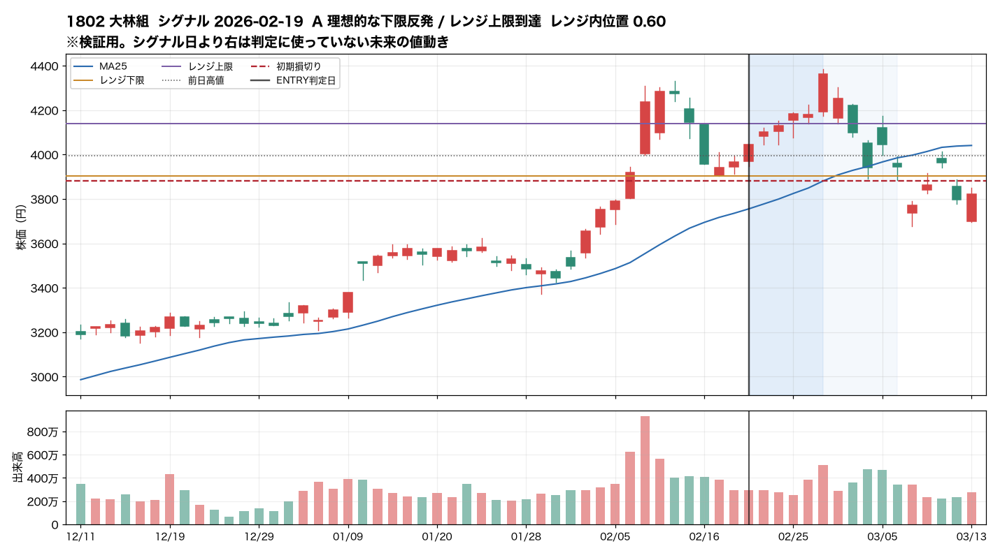
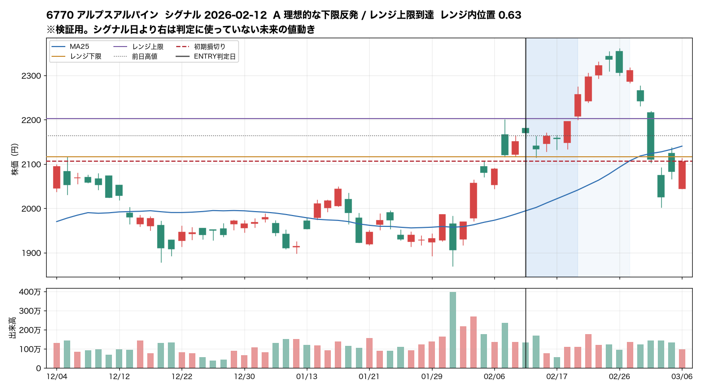
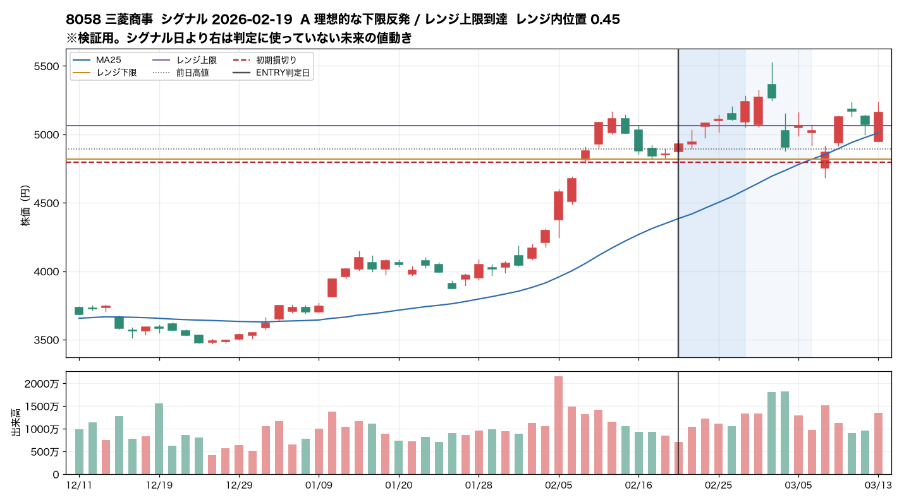
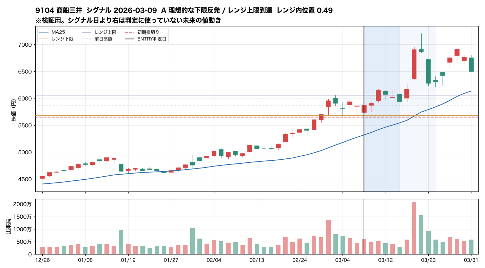
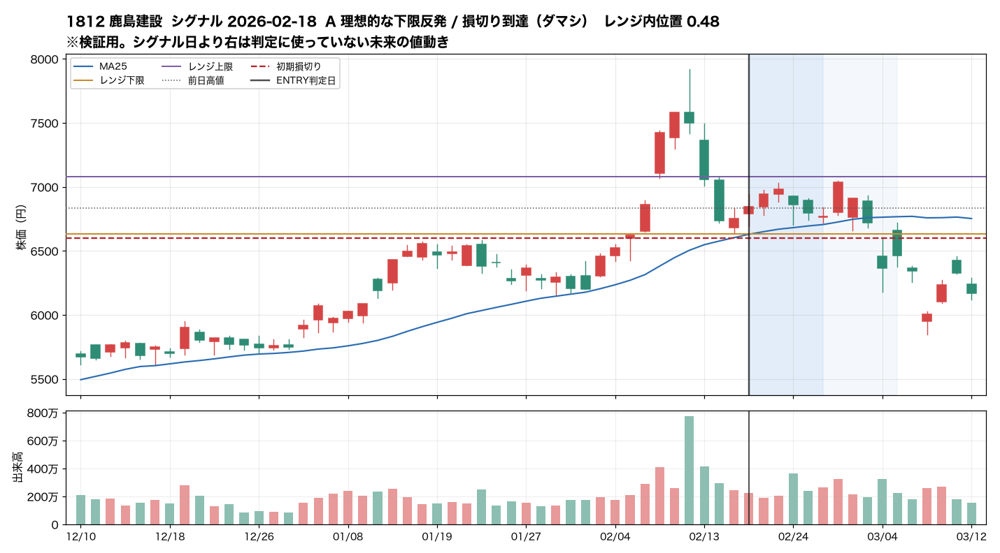
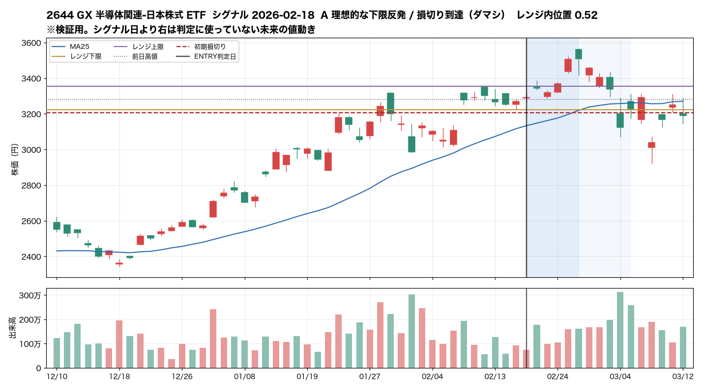
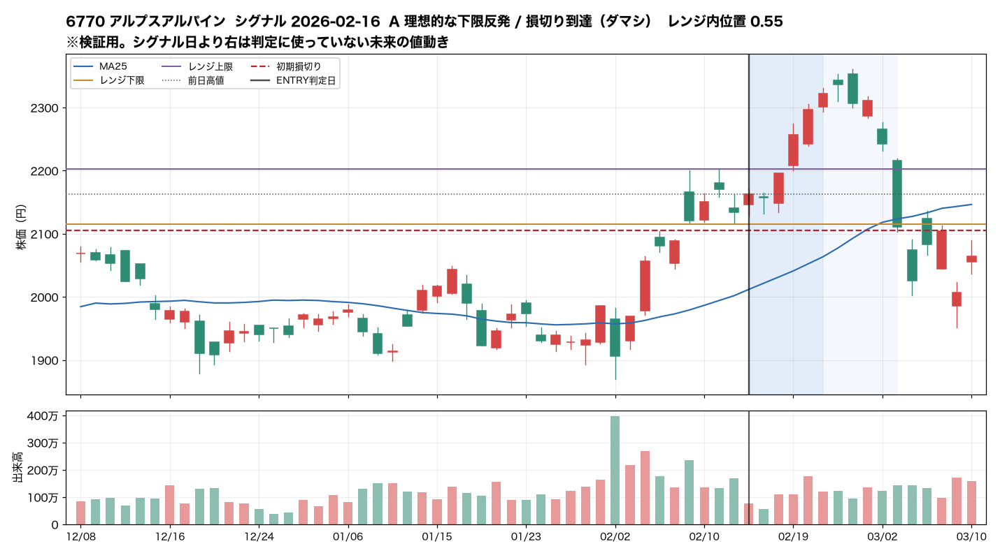
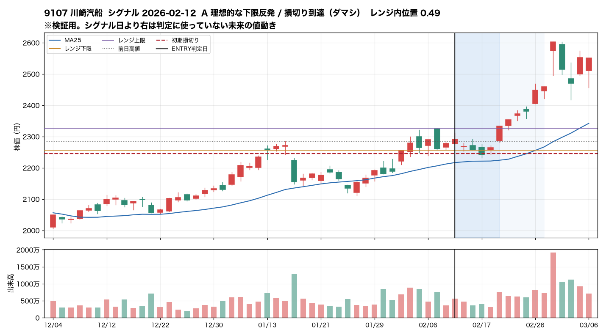
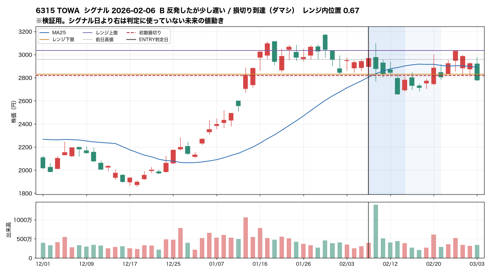
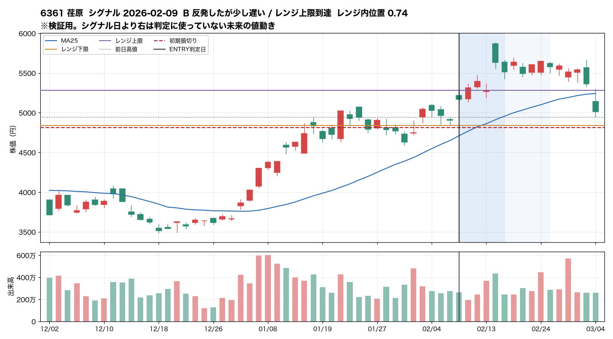
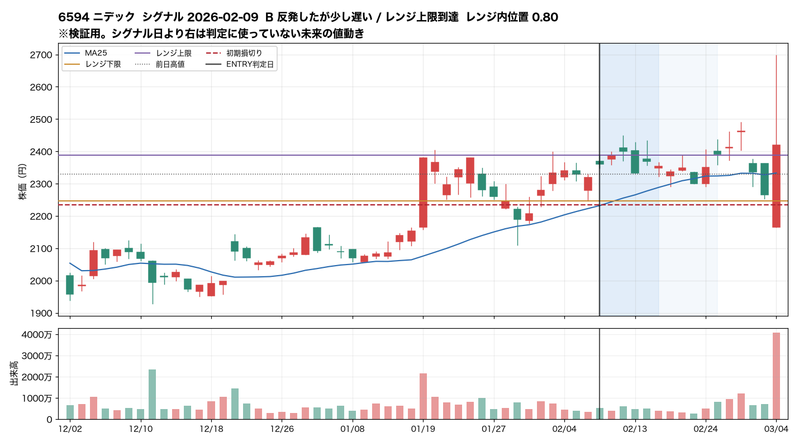
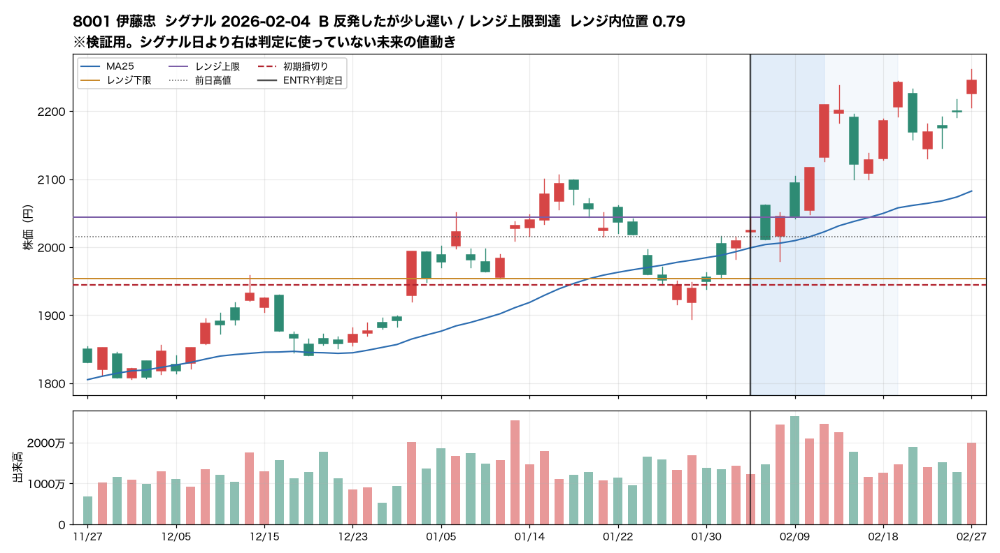
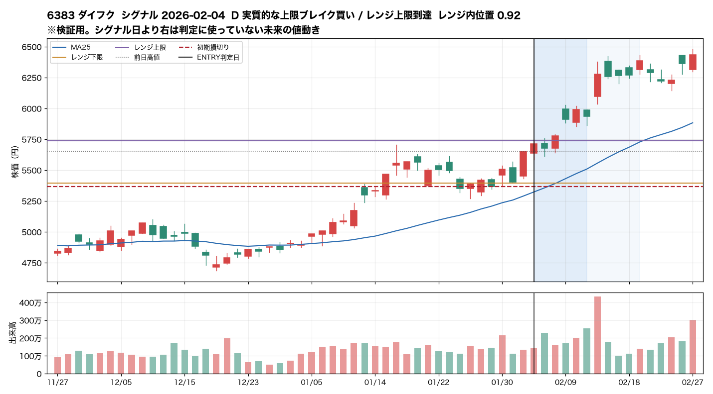
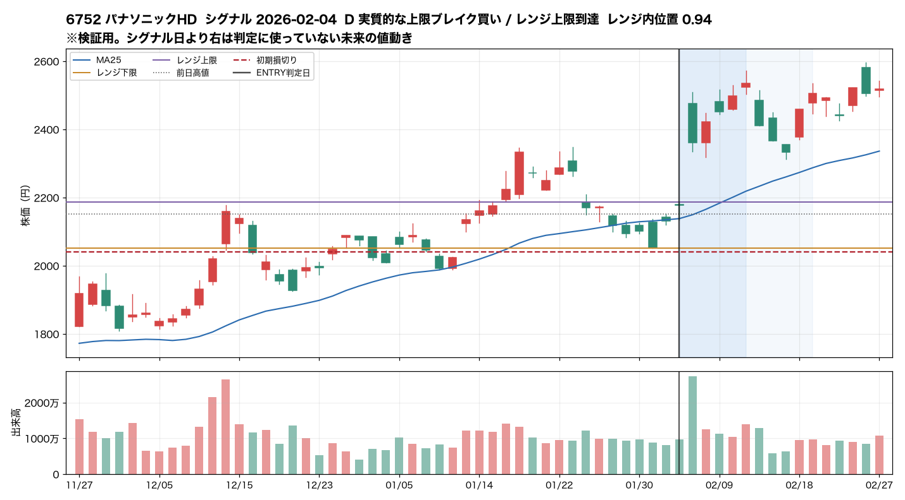
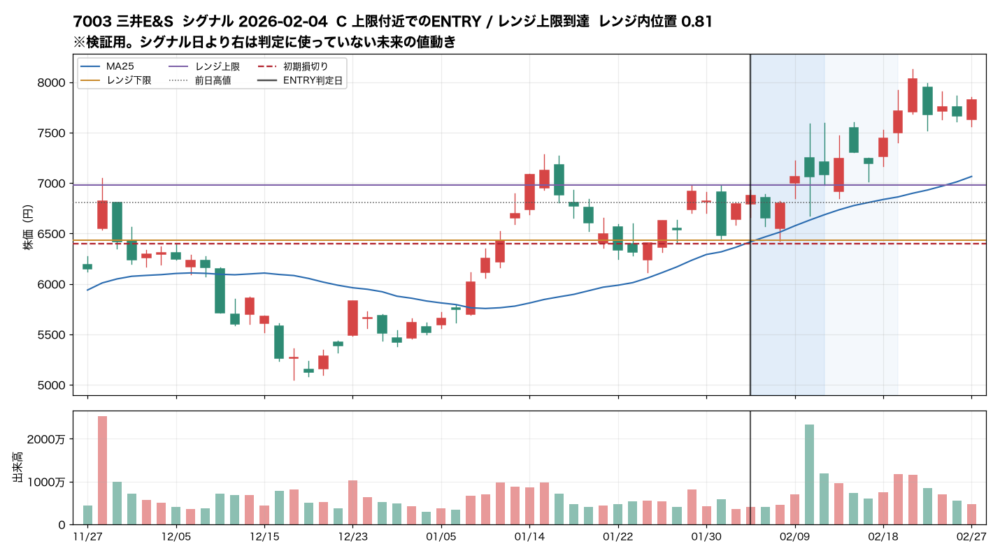
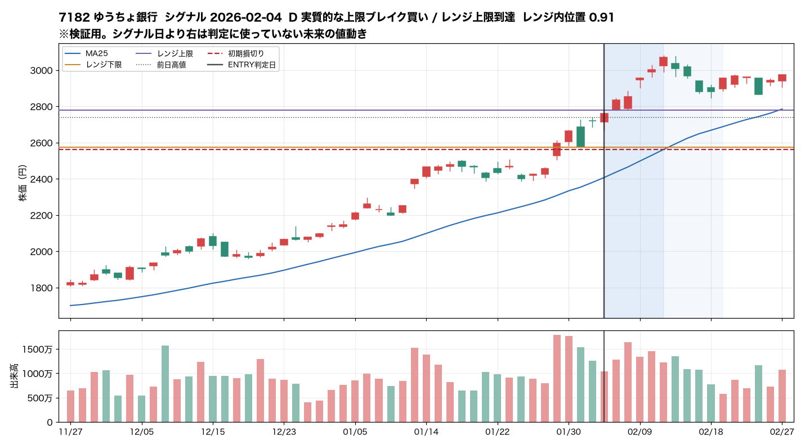
| 日付 | コード | 銘柄 | テーマ | 終値 | 位置 | 幅 | 日数 | 下限反応 | 接触から | 前日高値突破 | 損切距離 | 10日上昇 | 10日下落 | 形状 | 転帰 |
|---|---|---|---|---|---|---|---|---|---|---|---|---|---|---|---|
| 2026-08-10 | 9107 | 川崎汽船 | 造船・海運 | 2879 | 0.91 | 7.9% | 3 | 1 | 2 | 0.58% | 7.20% | － | － | D 実質的な上限ブレイク買い | データ不足 |
| 2026-08-10 | 9104 | 商船三井 | 造船・海運 | 6279 | 0.92 | 6.9% | 3 | 1 | 2 | 0.85% | 6.51% | － | － | D 実質的な上限ブレイク買い | データ不足 |
| 2026-08-10 | 9101 | 日本郵船 | 造船・海運 | 6157 | 0.87 | 8.4% | 3 | 1 | 2 | 0.62% | 7.32% | － | － | C 上限付近でのENTRY | データ不足 |
| 2026-08-07 | 9513 | J-POWER | 電力・エネルギーインフラ | 3912 | 0.78 | 3.9% | 4 | 1 | 2 | 0.10% | 3.42% | 0.28% | -2.35% | B 反発したが少し遅い | データ不足 |
| 2026-08-06 | 8306 | 三菱UFJ | 銀行・金利上昇 | 3574 | 0.82 | 4.6% | 3 | 1 | 1 | 0.45% | 4.12% | 0.81% | -2.66% | C 上限付近でのENTRY | データ不足 |
| 2026-08-06 | 8058 | 三菱商事 | 商社・資源 | 4748 | 0.74 | 4.5% | 3 | 1 | 2 | 0.08% | 3.69% | 3.35% | 0.51% | B 反発したが少し遅い | データ不足 |
| 2026-08-06 | 8001 | 伊藤忠 | 商社・資源 | 2034 | 0.94 | 5.2% | 4 | 1 | 2 | 2.01% | 5.10% | 3.20% | 0.29% | D 実質的な上限ブレイク買い | データ不足 |
| 2026-08-06 | 7203 | トヨタ | 自動車・円安 | 2984 | 0.72 | 5.5% | 3 | 1 | 1 | 2.02% | 4.30% | 1.29% | -1.47% | B 反発したが少し遅い | データ不足 |
| 2026-08-06 | 6702 | 富士通 | AIインフラ・通信 | 3579 | 0.94 | 5.8% | 3 | 1 | 2 | 1.36% | 5.62% | 4.97% | 0.25% | D 実質的な上限ブレイク買い | データ不足 |
| 2026-08-06 | 5703 | 日本軽金属HD | 非鉄・資源素材 | 2936 | 0.79 | 9.2% | 3 | 1 | 2 | 0.65% | 7.21% | 1.74% | -2.15% | B 反発したが少し遅い | データ不足 |
| 2026-08-05 | 8306 | 三菱UFJ | 銀行・金利上昇 | 3541 | 0.78 | 4.3% | 3 | 1 | 0 | 0.37% | 3.73% | 1.75% | -1.75% | B 反発したが少し遅い | データ不足 |
| 2026-08-05 | 6594 | ニデック | 電子部品・AI端末 | 2785 | 0.89 | 9.8% | 3 | 1 | 2 | 1.09% | 8.54% | 0.90% | -4.31% | C 上限付近でのENTRY | データ不足 |
| 2026-08-04 | 8015 | 豊田通商 | 商社・資源 | 6804 | 0.83 | 6.1% | 3 | 1 | 1 | 0.87% | 5.30% | 11.99% | 0.94% | C 上限付近でのENTRY | データ不足 |
| 2026-08-04 | 6301 | コマツ | 機械・設備投資 | 6912 | 0.74 | 6.8% | 3 | 1 | 1 | 1.65% | 5.25% | 8.10% | 0.07% | B 反発したが少し遅い | データ不足 |
| 2026-08-04 | 1813 | 不動テトラ | 建設・国土強靭化 | 2759 | 0.81 | 5.5% | 3 | 1 | 2 | 0.36% | 4.76% | 2.57% | -2.61% | C 上限付近でのENTRY | データ不足 |
| 2026-08-03 | 1813 | 不動テトラ | 建設・国土強靭化 | 2748 | 0.99 | 5.0% | 3 | 1 | 2 | 1.07% | 5.24% | 2.98% | -2.22% | D 実質的な上限ブレイク買い | データ不足 |
| 2026-07-30 | 9107 | 川崎汽船 | 造船・海運 | 2862 | 0.76 | 5.3% | 6 | 2 | 2 | 0.23% | 4.31% | 1.35% | -6.17% | B 反発したが少し遅い | データ不足 |
| 2026-07-30 | 8015 | 豊田通商 | 商社・資源 | 6625 | 0.94 | 4.9% | 7 | 3 | 2 | 0.73% | 4.84% | 15.02% | -2.25% | D 実質的な上限ブレイク買い | データ不足 |
| 2026-07-30 | 6770 | アルプスアルパイン | 電子部品・AI端末 | 2242 | 0.84 | 4.7% | 3 | 1 | 1 | 0.09% | 4.32% | 0.67% | -9.39% | C 上限付近でのENTRY | データ不足 |
| 2026-07-29 | 9107 | 川崎汽船 | 造船・海運 | 2855 | 0.69 | 4.9% | 4 | 2 | 1 | 1.01% | 3.78% | 1.58% | -5.95% | B 反発したが少し遅い | データ不足 |
| 2026-07-29 | 9104 | 商船三井 | 造船・海運 | 5953 | 0.75 | 4.7% | 4 | 2 | 1 | 0.98% | 3.89% | 6.00% | -4.96% | B 反発したが少し遅い | データ不足 |
| 2026-07-29 | 8015 | 豊田通商 | 商社・資源 | 6577 | 0.87 | 4.4% | 6 | 3 | 1 | 1.00% | 4.15% | 15.86% | -1.54% | D 実質的な上限ブレイク買い | データ不足 |
| 2026-07-28 | 7269 | スズキ | 自動車・円安 | 2078 | 0.86 | 7.0% | 8 | 1 | 2 | 1.14% | 6.15% | 3.99% | -13.11% | C 上限付近でのENTRY | データ不足 |
| 2026-07-28 | 7203 | トヨタ | 自動車・円安 | 3008 | 0.95 | 4.8% | 6 | 2 | 2 | 1.18% | 4.82% | 7.48% | -4.60% | D 実質的な上限ブレイク買い | データ不足 |
| 2026-07-27 | 8306 | 三菱UFJ | 銀行・金利上昇 | 3799 | 0.93 | 5.2% | 3 | 1 | 2 | 0.66% | 5.06% | -0.76% | -9.82% | D 実質的な上限ブレイク買い | 損切り到達（ダマシ） |
| 2026-07-27 | 8015 | 豊田通商 | 商社・資源 | 6558 | 0.77 | 3.7% | 4 | 2 | 1 | 0.35% | 3.28% | 16.19% | -3.39% | B 反発したが少し遅い | 損切り到達（ダマシ） |
| 2026-07-27 | 8002 | 丸紅 | 商社・資源 | 5450 | 0.87 | 4.1% | 3 | 1 | 2 | 0.52% | 3.95% | -0.46% | -12.15% | D 実質的な上限ブレイク買い | 損切り到達（ダマシ） |
| 2026-07-27 | 7269 | スズキ | 自動車・円安 | 2055 | 0.78 | 6.1% | 7 | 1 | 1 | 1.99% | 5.08% | 5.18% | -12.12% | B 反発したが少し遅い | 損切り到達（ダマシ） |
| 2026-07-27 | 7203 | トヨタ | 自動車・円安 | 2966 | 0.92 | 3.3% | 5 | 2 | 1 | 1.45% | 3.45% | 9.02% | -3.24% | D 実質的な上限ブレイク買い | レンジ上限到達 |
| 2026-07-23 | 9503 | 関西電力 | 電力・エネルギーインフラ | 2362 | 0.94 | 2.8% | 3 | 1 | 2 | 0.19% | 3.07% | 4.76% | -1.23% | D 実質的な上限ブレイク買い | レンジ上限到達 |
| 2026-07-23 | 8015 | 豊田通商 | 商社・資源 | 6594 | 0.96 | 7.4% | 3 | 1 | 2 | 0.59% | 7.06% | 13.13% | -3.91% | D 実質的な上限ブレイク買い | レンジ上限到達 |
| 2026-07-23 | 7011 | 三菱重工 | 重工・防衛;宇宙・衛星 | 3930 | 1.00 | 5.7% | 3 | 1 | 2 | 0.36% | 5.89% | 5.73% | -7.86% | D 実質的な上限ブレイク買い | 損切り到達（ダマシ） |
| 2026-07-22 | 9101 | 日本郵船 | 造船・海運 | 5818 | 0.92 | 4.4% | 3 | 1 | 2 | 0.97% | 4.38% | 6.02% | -1.39% | D 実質的な上限ブレイク買い | レンジ上限到達 |
| 2026-07-22 | 8308 | りそなHD | 銀行・金利上昇 | 2322 | 0.76 | 7.5% | 3 | 1 | 2 | 1.57% | 5.86% | 4.22% | -7.28% | B 反発したが少し遅い | 損切り到達（ダマシ） |
| 2026-07-22 | 8306 | 三菱UFJ | 銀行・金利上昇 | 3668 | 0.94 | 8.0% | 3 | 1 | 2 | 2.46% | 7.47% | 3.95% | -6.60% | D 実質的な上限ブレイク買い | レンジ上限到達 |
| 2026-07-22 | 6770 | アルプスアルパイン | 電子部品・AI端末 | 2126 | 0.76 | 7.8% | 3 | 1 | 2 | 0.81% | 6.12% | 6.23% | -4.42% | B 反発したが少し遅い | レンジ上限到達 |
| 2026-07-22 | 5838 | 楽天銀行 | 銀行・金利上昇 | 5486 | 0.88 | 6.9% | 3 | 1 | 2 | 0.68% | 6.18% | 4.43% | -5.36% | C 上限付近でのENTRY | レンジ上限到達 |
| 2026-07-22 | 1802 | 大林組 | 建設・国土強靭化 | 3261 | 0.61 | 6.0% | 10 | 2 | 2 | 0.18% | 4.01% | 2.51% | -7.15% | A 理想的な下限反発 | 損切り到達（ダマシ） |
| 2026-07-16 | 7269 | スズキ | 自動車・円安 | 2052 | 0.76 | 3.9% | 6 | 2 | 2 | 0.69% | 3.36% | 5.34% | -4.46% | B 反発したが少し遅い | 損切り到達（ダマシ） |
| 2026-07-16 | 6701 | NEC | AIインフラ・通信;宇宙・衛星 | 4441 | 0.73 | 7.3% | 9 | 2 | 1 | 2.99% | 5.54% | 14.93% | -5.63% | B 反発したが少し遅い | 損切り到達（ダマシ） |
| 2026-07-15 | 9502 | 中部電力 | 電力・エネルギーインフラ | 3096 | 0.53 | 8.9% | 3 | 1 | 1 | 2.96% | 5.00% | -0.23% | -17.22% | A 理想的な下限反発 | 損切り到達（ダマシ） |
| 2026-07-15 | 8308 | りそなHD | 銀行・金利上昇 | 2380 | 0.61 | 4.5% | 4 | 2 | 1 | 0.08% | 3.13% | 1.70% | -9.52% | A 理想的な下限反発 | 損切り到達（ダマシ） |
| 2026-07-15 | 8002 | 丸紅 | 商社・資源 | 5110 | 0.93 | 6.7% | 3 | 1 | 1 | 3.40% | 6.34% | 7.22% | -4.09% | D 実質的な上限ブレイク買い | レンジ上限到達 |
| 2026-07-15 | 7721 | 東京計器 | 重工・防衛 | 6600 | 1.00 | 8.0% | 3 | 1 | 1 | 1.38% | 7.89% | 10.91% | -10.00% | D 実質的な上限ブレイク買い | 損切り到達（ダマシ） |
| 2026-07-15 | 7203 | トヨタ | 自動車・円安 | 2876 | 1.00 | 2.9% | 4 | 1 | 2 | 0.79% | 3.32% | 12.43% | -0.64% | D 実質的な上限ブレイク買い | レンジ上限到達 |
| 2026-07-15 | 7202 | いすゞ | 自動車・円安 | 2346 | 0.49 | 3.5% | 4 | 1 | 1 | 0.28% | 2.18% | 6.03% | -3.69% | A 理想的な下限反発 | 損切り到達（ダマシ） |
| 2026-07-15 | 7182 | ゆうちょ銀行 | 銀行・金利上昇 | 3350 | 0.88 | 3.4% | 4 | 2 | 1 | 0.78% | 3.44% | 3.43% | -7.58% | D 実質的な上限ブレイク買い | 損切り到達（ダマシ） |
| 2026-07-15 | 7011 | 三菱重工 | 重工・防衛;宇宙・衛星 | 3828 | 0.75 | 4.8% | 4 | 1 | 0 | 0.31% | 4.01% | 4.68% | -5.28% | B 反発したが少し遅い | 損切り到達（ダマシ） |
| 2026-07-15 | 6770 | アルプスアルパイン | 電子部品・AI端末 | 2148 | 0.90 | 5.9% | 5 | 2 | 2 | 0.61% | 5.50% | 5.17% | -6.59% | D 実質的な上限ブレイク買い | 損切り到達（ダマシ） |
| 2026-07-15 | 2644 | GX 半導体関連-日本株式 ETF | 半導体・生成AI | 4917 | 0.78 | 9.2% | 3 | 1 | 1 | 2.91% | 7.16% | -2.85% | -31.67% | B 反発したが少し遅い | 損切り到達（ダマシ） |
| 2026-07-15 | 1813 | 不動テトラ | 建設・国土強靭化 | 2722 | 0.79 | 4.3% | 3 | 1 | 0 | 1.99% | 3.72% | 2.02% | -5.22% | B 反発したが少し遅い | 損切り到達（ダマシ） |
| 2026-07-15 | 1802 | 大林組 | 建設・国土強靭化 | 3242 | 0.82 | 3.5% | 3 | 1 | 1 | 0.84% | 3.29% | 3.12% | -2.96% | D 実質的な上限ブレイク買い | レンジ上限到達 |
| 2026-07-14 | 6701 | NEC | AIインフラ・通信;宇宙・衛星 | 4463 | 0.77 | 6.2% | 6 | 3 | 1 | 2.48% | 5.03% | 3.36% | -6.09% | B 反発したが少し遅い | 損切り到達（ダマシ） |
| 2026-07-10 | 8306 | 三菱UFJ | 銀行・金利上昇 | 3461 | 0.82 | 2.9% | 3 | 1 | 1 | 1.08% | 2.80% | 10.17% | -1.44% | D 実質的な上限ブレイク買い | レンジ上限到達 |
| 2026-07-09 | 2644 | GX 半導体関連-日本株式 ETF | 半導体・生成AI | 4735 | 0.61 | 9.5% | 3 | 1 | 1 | 1.26% | 5.90% | 5.81% | -13.88% | A 理想的な下限反発 | 損切り到達（ダマシ） |
| 2026-07-07 | 9502 | 中部電力 | 電力・エネルギーインフラ | 3234 | 0.89 | 5.8% | 4 | 1 | 2 | 0.56% | 5.36% | 1.61% | -13.47% | D 実質的な上限ブレイク買い | 損切り到達（ダマシ） |
| 2026-07-06 | 9502 | 中部電力 | 電力・エネルギーインフラ | 3200 | 0.89 | 4.6% | 3 | 1 | 1 | 0.69% | 4.36% | 2.69% | -12.55% | D 実質的な上限ブレイク買い | 損切り到達（ダマシ） |
| 2026-07-06 | 8308 | りそなHD | 銀行・金利上昇 | 2283 | 1.00 | 6.4% | 3 | 1 | 2 | 1.51% | 6.51% | 6.02% | -3.77% | D 実質的な上限ブレイク買い | レンジ上限到達 |
| 2026-07-06 | 6752 | パナソニックHD | 電子部品・AI端末 | 4557 | 0.64 | 7.0% | 3 | 1 | 1 | 0.29% | 4.76% | 2.81% | -14.42% | A 理想的な下限反発 | 損切り到達（ダマシ） |
| 2026-07-06 | 1812 | 鹿島建設 | 建設・国土強靭化 | 6227 | 0.78 | 8.7% | 3 | 1 | 2 | 0.23% | 6.83% | 1.03% | -13.46% | B 反発したが少し遅い | 損切り到達（ダマシ） |
| 2026-07-03 | 8316 | 三井住友FG | 銀行・金利上昇 | 6672 | 0.96 | 5.3% | 3 | 1 | 2 | 0.54% | 5.36% | 6.97% | -1.44% | D 実質的な上限ブレイク買い | レンジ上限到達 |
| 2026-07-03 | 8308 | りそなHD | 銀行・金利上昇 | 2246 | 0.98 | 8.4% | 6 | 2 | 2 | 1.03% | 8.10% | 7.79% | -2.16% | D 実質的な上限ブレイク買い | レンジ上限到達 |
| 2026-07-02 | 8316 | 三井住友FG | 銀行・金利上昇 | 6573 | 0.82 | 5.6% | 5 | 1 | 2 | 1.53% | 4.83% | 8.58% | 0.15% | C 上限付近でのENTRY | レンジ上限到達 |
| 2026-07-02 | 8308 | りそなHD | 銀行・金利上昇 | 2197 | 0.83 | 7.2% | 5 | 2 | 1 | 3.17% | 6.07% | 10.17% | -0.55% | C 上限付近でのENTRY | レンジ上限到達 |
| 2026-06-30 | 2644 | GX 半導体関連-日本株式 ETF | 半導体・生成AI | 4940 | 0.81 | 9.9% | 3 | 1 | 1 | 1.92% | 7.89% | 7.04% | -9.35% | C 上限付近でのENTRY | 損切り到達（ダマシ） |
| 2026-06-29 | 1812 | 鹿島建設 | 建設・国土強靭化 | 5867 | 0.79 | 5.6% | 3 | 1 | 1 | 1.10% | 4.74% | 8.04% | -5.57% | B 反発したが少し遅い | 損切り到達（ダマシ） |
| 2026-06-23 | 9502 | 中部電力 | 電力・エネルギーインフラ | 2902 | 0.85 | 4.8% | 6 | 2 | 1 | 1.40% | 4.43% | 12.11% | -1.12% | D 実質的な上限ブレイク買い | レンジ上限到達 |
| 2026-06-22 | 6762 | TDK | 電子部品・AI端末 | 4063 | 0.79 | 7.5% | 3 | 1 | 2 | 1.70% | 6.08% | 3.10% | -15.24% | B 反発したが少し遅い | 損切り到達（ダマシ） |
| 2026-06-18 | 8316 | 三井住友FG | 銀行・金利上昇 | 6728 | 0.99 | 5.8% | 4 | 1 | 2 | 2.28% | 5.90% | -0.25% | -6.55% | D 実質的な上限ブレイク買い | 損切り到達（ダマシ） |
| 2026-06-18 | 8306 | 三菱UFJ | 銀行・金利上昇 | 3374 | 0.90 | 6.5% | 4 | 1 | 2 | 1.87% | 6.04% | -0.09% | -5.75% | D 実質的な上限ブレイク買い | 中立 |
| 2026-06-18 | 200A | NEXT FUNDS 日経半導体株指数連動型上場投信 | 半導体・生成AI | 6091 | 0.89 | 6.6% | 3 | 1 | 1 | 1.99% | 6.05% | 9.46% | -11.25% | D 実質的な上限ブレイク買い | 損切り到達（ダマシ） |
| 2026-06-17 | 7270 | SUBARU | 自動車・円安 | 2582 | 0.80 | 3.9% | 3 | 1 | 1 | 0.70% | 3.49% | 0.50% | -8.42% | C 上限付近でのENTRY | 損切り到達（ダマシ） |
| 2026-06-15 | 8306 | 三菱UFJ | 銀行・金利上昇 | 3242 | 0.66 | 8.0% | 8 | 2 | 2 | 1.15% | 5.47% | 4.69% | -1.91% | B 反発したが少し遅い | レンジ上限到達 |
| 2026-06-12 | 8308 | りそなHD | 銀行・金利上昇 | 2147 | 0.53 | 5.2% | 4 | 2 | 1 | 0.12% | 3.16% | 6.08% | -3.19% | A 理想的な下限反発 | 損切り到達（ダマシ） |
| 2026-06-12 | 8306 | 三菱UFJ | 銀行・金利上昇 | 3162 | 0.36 | 7.3% | 7 | 2 | 1 | 0.44% | 3.08% | 7.34% | 0.76% | A 理想的な下限反発 | レンジ上限到達 |
| 2026-06-12 | 7182 | ゆうちょ銀行 | 銀行・金利上昇 | 3211 | 0.71 | 7.5% | 7 | 2 | 1 | 3.15% | 5.52% | 3.02% | -5.26% | B 反発したが少し遅い | レンジ上限到達 |
| 2026-06-09 | 8308 | りそなHD | 銀行・金利上昇 | 2154 | 0.83 | 7.1% | 5 | 2 | 1 | 2.62% | 6.07% | 5.73% | -2.99% | C 上限付近でのENTRY | レンジ上限到達 |
| 2026-06-09 | 7182 | ゆうちょ銀行 | 銀行・金利上昇 | 3154 | 0.46 | 7.5% | 3 | 1 | 1 | 0.29% | 3.81% | 4.88% | -2.98% | A 理想的な下限反発 | レンジ上限到達 |
| 2026-06-05 | 8306 | 三菱UFJ | 銀行・金利上昇 | 3219 | 0.76 | 7.2% | 3 | 1 | 2 | 0.34% | 5.66% | 5.44% | -4.32% | B 反発したが少し遅い | レンジ上限到達 |
| 2026-06-03 | 8316 | 三井住友FG | 銀行・金利上昇 | 6148 | 0.98 | 6.3% | 3 | 1 | 1 | 3.31% | 6.25% | 9.39% | -2.33% | D 実質的な上限ブレイク買い | レンジ上限到達 |
| 2026-06-02 | 7182 | ゆうちょ銀行 | 銀行・金利上昇 | 3066 | 0.95 | 4.0% | 3 | 2 | 0 | 1.02% | 4.17% | 7.89% | -0.55% | D 実質的な上限ブレイク買い | レンジ上限到達 |
| 2026-05-29 | 9513 | J-POWER | 電力・エネルギーインフラ | 4017 | 0.72 | 4.6% | 3 | 1 | 1 | 1.13% | 3.70% | 1.27% | -3.53% | B 反発したが少し遅い | レンジ上限到達 |
| 2026-05-29 | 6594 | ニデック | 電子部品・AI端末 | 2792 | 0.61 | 8.9% | 6 | 2 | 1 | 2.61% | 5.67% | 4.66% | -10.06% | A 理想的な下限反発 | 損切り到達（ダマシ） |
| 2026-05-22 | 6645 | オムロン | 電子部品・AI端末 | 5480 | 0.44 | 9.4% | 5 | 1 | 2 | 0.18% | 4.44% | 16.48% | -2.81% | A 理想的な下限反発 | レンジ上限到達 |
| 2026-05-21 | 9513 | J-POWER | 電力・エネルギーインフラ | 4392 | 0.79 | 5.8% | 5 | 2 | 2 | 0.18% | 4.87% | 0.43% | -11.77% | B 反発したが少し遅い | 損切り到達（ダマシ） |
| 2026-05-20 | 9513 | J-POWER | 電力・エネルギーインフラ | 4352 | 0.83 | 4.4% | 4 | 2 | 1 | 0.28% | 4.00% | 2.11% | -10.89% | C 上限付近でのENTRY | 損切り到達（ダマシ） |
| 2026-05-19 | 8316 | 三井住友FG | 銀行・金利上昇 | 5942 | 0.91 | 6.1% | 3 | 1 | 2 | 2.15% | 5.72% | 4.06% | -2.51% | D 実質的な上限ブレイク買い | レンジ上限到達 |
| 2026-05-19 | 8308 | りそなHD | 銀行・金利上昇 | 2078 | 0.73 | 4.9% | 3 | 1 | 1 | 0.19% | 3.95% | 3.87% | -5.77% | B 反発したが少し遅い | 損切り到達（ダマシ） |
| 2026-05-15 | 8306 | 三菱UFJ | 銀行・金利上昇 | 2929 | 0.79 | 3.7% | 4 | 1 | 2 | 0.19% | 3.32% | 8.23% | 1.19% | B 反発したが少し遅い | レンジ上限到達 |
| 2026-05-13 | 8316 | 三井住友FG | 銀行・金利上昇 | 5852 | 0.89 | 6.1% | 3 | 1 | 2 | 0.98% | 5.58% | 5.66% | -3.79% | D 実質的な上限ブレイク買い | レンジ上限到達 |
| 2026-05-13 | 8001 | 伊藤忠 | 商社・資源 | 2089 | 0.85 | 7.1% | 3 | 1 | 2 | 1.51% | 6.17% | 0.00% | -8.54% | C 上限付近でのENTRY | 損切り到達（ダマシ） |
| 2026-05-13 | 6645 | オムロン | 電子部品・AI端末 | 6272 | 0.95 | 5.5% | 4 | 2 | 0 | 1.03% | 5.43% | -0.06% | -16.09% | D 実質的な上限ブレイク買い | 損切り到達（ダマシ） |
| 2026-05-12 | 8411 | みずほFG | 銀行・金利上昇 | 6970 | 0.91 | 6.4% | 7 | 2 | 2 | 0.03% | 6.01% | 8.01% | -8.48% | D 実質的な上限ブレイク買い | 損切り到達（ダマシ） |
| 2026-05-12 | 8308 | りそなHD | 銀行・金利上昇 | 2054 | 1.00 | 7.2% | 3 | 1 | 2 | 2.29% | 7.16% | 5.09% | -2.34% | D 実質的な上限ブレイク買い | レンジ上限到達 |
| 2026-05-12 | 5838 | 楽天銀行 | 銀行・金利上昇 | 6422 | 0.95 | 5.1% | 7 | 2 | 2 | 1.28% | 5.06% | 9.41% | -25.58% | D 実質的な上限ブレイク買い | 損切り到達（ダマシ） |
| 2026-05-11 | 8411 | みずほFG | 銀行・金利上昇 | 6890 | 0.77 | 6.0% | 6 | 2 | 1 | 1.22% | 4.92% | 9.26% | -7.42% | B 反発したが少し遅い | 損切り到達（ダマシ） |
| 2026-05-11 | 8316 | 三井住友FG | 銀行・金利上昇 | 5661 | 0.70 | 4.2% | 3 | 1 | 1 | 1.00% | 3.36% | 9.22% | -0.55% | B 反発したが少し遅い | レンジ上限到達 |
| 2026-05-11 | 8015 | 豊田通商 | 商社・資源 | 6991 | 0.79 | 5.7% | 3 | 1 | 0 | 1.41% | 4.77% | 8.12% | -4.16% | B 反発したが少し遅い | レンジ上限到達 |
| 2026-05-11 | 7182 | ゆうちょ銀行 | 銀行・金利上昇 | 2796 | 0.78 | 4.6% | 3 | 1 | 1 | 0.96% | 3.92% | 14.71% | -1.07% | B 反発したが少し遅い | レンジ上限到達 |
| 2026-05-11 | 1803 | 清水建設 | 建設・国土強靭化 | 3131 | 0.80 | 5.9% | 5 | 2 | 0 | 0.97% | 5.00% | 13.19% | -18.97% | B 反発したが少し遅い | 損切り到達（ダマシ） |
| 2026-05-07 | 8411 | みずほFG | 銀行・金利上昇 | 6926 | 0.86 | 6.0% | 3 | 1 | 1 | 2.90% | 5.41% | 7.03% | -7.90% | C 上限付近でのENTRY | 損切り到達（ダマシ） |
| 2026-05-07 | 8316 | 三井住友FG | 銀行・金利上昇 | 5689 | 0.87 | 5.7% | 4 | 1 | 1 | 2.28% | 5.20% | 8.68% | -3.36% | C 上限付近でのENTRY | レンジ上限到達 |
| 2026-05-07 | 5711 | 三菱マテリアル | 非鉄・資源素材 | 5340 | 0.79 | 8.9% | 7 | 1 | 1 | 3.63% | 7.02% | 14.48% | -12.15% | B 反発したが少し遅い | 損切り到達（ダマシ） |
| 2026-05-07 | 464A | QPSホールディングス | 宇宙・衛星 | 2676 | 0.86 | 9.5% | 3 | 1 | 2 | 3.08% | 8.05% | 37.52% | -1.53% | C 上限付近でのENTRY | レンジ上限到達 |
| 2026-04-28 | 8002 | 丸紅 | 商社・資源 | 6084 | 0.93 | 5.4% | 5 | 2 | 1 | 1.98% | 5.28% | 1.25% | -12.05% | D 実質的な上限ブレイク買い | 損切り到達（ダマシ） |
| 2026-04-28 | 5838 | 楽天銀行 | 銀行・金利上昇 | 6415 | 0.94 | 6.6% | 5 | 2 | 1 | 3.57% | 6.32% | 3.90% | -8.00% | D 実質的な上限ブレイク買い | 損切り到達（ダマシ） |
| 2026-04-27 | 8306 | 三菱UFJ | 銀行・金利上昇 | 2788 | 0.67 | 4.0% | 4 | 2 | 0 | 0.18% | 3.11% | 5.86% | -1.22% | B 反発したが少し遅い | レンジ上限到達 |
| 2026-04-27 | 6525 | KOKUSAI ELECTRIC | 半導体・生成AI | 6731 | 0.59 | 5.8% | 3 | 1 | 2 | 0.01% | 3.77% | 13.67% | -11.75% | A 理想的な下限反発 | 損切り到達（ダマシ） |
| 2026-04-27 | 5703 | 日本軽金属HD | 非鉄・資源素材 | 2886 | 0.71 | 3.9% | 3 | 1 | 2 | 0.24% | 3.15% | 12.96% | -6.34% | B 反発したが少し遅い | 損切り到達（ダマシ） |
| 2026-04-27 | 200A | NEXT FUNDS 日経半導体株指数連動型上場投信 | 半導体・生成AI | 3897 | 0.85 | 6.2% | 4 | 1 | 2 | 2.36% | 5.48% | 15.86% | -2.34% | C 上限付近でのENTRY | レンジ上限到達 |
| 2026-04-24 | 6981 | 村田製作所 | 電子部品・AI端末 | 4936 | 0.77 | 7.4% | 3 | 1 | 1 | 1.42% | 5.82% | 31.85% | -3.77% | B 反発したが少し遅い | レンジ上限到達 |
| 2026-04-23 | 6301 | コマツ | 機械・設備投資 | 6970 | 0.69 | 3.3% | 4 | 2 | 0 | 0.84% | 2.74% | 5.49% | -7.69% | B 反発したが少し遅い | 損切り到達（ダマシ） |
| 2026-04-22 | 6976 | 太陽誘電 | 電子部品・AI端末 | 6264 | 0.63 | 6.5% | 3 | 1 | 0 | 0.16% | 4.42% | 11.69% | -4.69% | A 理想的な下限反発 | 損切り到達（ダマシ） |
| 2026-04-22 | 6701 | NEC | AIインフラ・通信;宇宙・衛星 | 4524 | 0.98 | 5.9% | 5 | 2 | 2 | 0.69% | 5.95% | 4.05% | -12.47% | D 実質的な上限ブレイク買い | 損切り到達（ダマシ） |
| 2026-04-22 | 5803 | フジクラ | 電線・データセンター | 5985 | 0.99 | 8.4% | 5 | 2 | 2 | 1.63% | 8.18% | 29.82% | -3.43% | D 実質的な上限ブレイク買い | レンジ上限到達 |
| 2026-04-22 | 200A | NEXT FUNDS 日経半導体株指数連動型上場投信 | 半導体・生成AI | 3800 | 1.00 | 5.1% | 4 | 1 | 2 | 1.88% | 5.34% | 16.74% | -2.58% | D 実質的な上限ブレイク買い | レンジ上限到達 |
| 2026-04-21 | 8002 | 丸紅 | 商社・資源 | 6001 | 0.70 | 4.0% | 8 | 2 | 0 | 0.47% | 3.20% | 2.65% | -10.83% | B 反発したが少し遅い | 損切り到達（ダマシ） |
| 2026-04-21 | 6702 | 富士通 | AIインフラ・通信 | 3883 | 1.00 | 5.9% | 3 | 1 | 2 | 2.48% | 6.09% | 0.70% | -22.33% | D 実質的な上限ブレイク買い | 損切り到達（ダマシ） |
| 2026-04-21 | 6701 | NEC | AIインフラ・通信;宇宙・衛星 | 4431 | 0.71 | 5.1% | 4 | 2 | 1 | 1.68% | 3.98% | 6.23% | -10.63% | B 反発したが少し遅い | 損切り到達（ダマシ） |
| 2026-04-21 | 6479 | ミネベアミツミ | 機械・設備投資 | 3128 | 0.96 | 6.3% | 3 | 1 | 2 | 0.26% | 6.18% | 10.55% | -4.32% | D 実質的な上限ブレイク買い | レンジ上限到達 |
| 2026-04-21 | 464A | QPSホールディングス | 宇宙・衛星 | 2750 | 0.89 | 7.4% | 3 | 1 | 1 | 0.36% | 6.61% | 11.45% | -12.58% | C 上限付近でのENTRY | 損切り到達（ダマシ） |
| 2026-04-21 | 2644 | GX 半導体関連-日本株式 ETF | 半導体・生成AI | 3649 | 0.77 | 4.0% | 5 | 2 | 1 | 0.88% | 3.49% | 12.12% | -1.91% | B 反発したが少し遅い | レンジ上限到達 |
| 2026-04-21 | 200A | NEXT FUNDS 日経半導体株指数連動型上場投信 | 半導体・生成AI | 3721 | 0.88 | 3.3% | 3 | 1 | 1 | 1.11% | 3.33% | 19.22% | -0.51% | D 実質的な上限ブレイク買い | レンジ上限到達 |
| 2026-04-20 | 6645 | オムロン | 電子部品・AI端末 | 5096 | 1.00 | 6.2% | 3 | 1 | 2 | 0.71% | 6.34% | 22.59% | -3.12% | D 実質的な上限ブレイク買い | レンジ上限到達 |
| 2026-04-20 | 6383 | ダイフク | 機械・設備投資 | 6410 | 0.40 | 5.5% | 6 | 2 | 1 | 0.40% | 2.65% | 17.55% | -2.89% | A 理想的な下限反発 | 損切り到達（ダマシ） |
| 2026-04-20 | 6361 | 荏原 | 機械・設備投資 | 5104 | 0.64 | 6.3% | 3 | 1 | 1 | 0.31% | 4.34% | 15.81% | -0.33% | A 理想的な下限反発 | レンジ上限到達 |
| 2026-04-17 | 464A | QPSホールディングス | 宇宙・衛星 | 2647 | 0.61 | 10.0% | 3 | 1 | 2 | 0.11% | 6.18% | 5.52% | -9.18% | A 理想的な下限反発 | 損切り到達（ダマシ） |
| 2026-04-16 | 8306 | 三菱UFJ | 銀行・金利上昇 | 2946 | 0.86 | 5.0% | 4 | 1 | 2 | 0.94% | 4.60% | -0.70% | -7.86% | D 実質的な上限ブレイク買い | 損切り到達（ダマシ） |
| 2026-04-16 | 8002 | 丸紅 | 商社・資源 | 6040 | 0.95 | 3.2% | 4 | 1 | 0 | 0.37% | 3.45% | 1.99% | -4.90% | D 実質的な上限ブレイク買い | 損切り到達（ダマシ） |
| 2026-04-16 | 7182 | ゆうちょ銀行 | 銀行・金利上昇 | 2798 | 0.90 | 4.7% | 4 | 1 | 2 | 0.39% | 4.52% | 0.00% | -12.08% | D 実質的な上限ブレイク買い | 損切り到達（ダマシ） |
| 2026-04-15 | 9502 | 中部電力 | 電力・エネルギーインフラ | 2890 | 0.71 | 7.7% | 6 | 2 | 2 | 1.67% | 5.70% | 2.18% | -11.56% | B 反発したが少し遅い | 損切り到達（ダマシ） |
| 2026-04-15 | 8411 | みずほFG | 銀行・金利上昇 | 6955 | 0.71 | 5.3% | 5 | 1 | 1 | 1.41% | 4.13% | 1.06% | -8.70% | B 反発したが少し遅い | 損切り到達（ダマシ） |
| 2026-04-15 | 8316 | 三井住友FG | 銀行・金利上昇 | 5650 | 0.73 | 3.2% | 3 | 1 | 1 | 0.36% | 2.79% | 1.56% | -6.76% | B 反発したが少し遅い | 損切り到達（ダマシ） |
| 2026-04-15 | 8306 | 三菱UFJ | 銀行・金利上昇 | 2914 | 0.94 | 3.3% | 3 | 1 | 1 | 0.83% | 3.52% | 1.82% | -6.81% | D 実質的な上限ブレイク買い | 損切り到達（ダマシ） |
| 2026-04-15 | 7182 | ゆうちょ銀行 | 銀行・金利上昇 | 2772 | 0.85 | 3.8% | 3 | 1 | 1 | 0.78% | 3.62% | 1.39% | -11.25% | D 実質的な上限ブレイク買い | 損切り到達（ダマシ） |
| 2026-04-15 | 4063 | 信越化学 | 半導体・生成AI | 6809 | 0.83 | 4.7% | 3 | 1 | 1 | 1.69% | 4.26% | 7.96% | -3.30% | C 上限付近でのENTRY | レンジ上限到達 |
| 2026-04-14 | 9502 | 中部電力 | 電力・エネルギーインフラ | 2834 | 0.84 | 4.2% | 5 | 2 | 1 | 1.18% | 3.87% | 4.16% | -9.84% | D 実質的な上限ブレイク買い | 損切り到達（ダマシ） |
| 2026-04-14 | 8002 | 丸紅 | 商社・資源 | 6018 | 0.75 | 3.6% | 3 | 1 | 0 | 0.13% | 3.10% | 1.46% | -3.76% | B 反発したが少し遅い | 損切り到達（ダマシ） |
| 2026-04-14 | 6752 | パナソニックHD | 電子部品・AI端末 | 2918 | 0.72 | 5.3% | 3 | 1 | 1 | 0.02% | 4.17% | 6.91% | -2.78% | B 反発したが少し遅い | レンジ上限到達 |
| 2026-04-14 | 6383 | ダイフク | 機械・設備投資 | 6541 | 0.79 | 5.7% | 3 | 1 | 1 | 2.17% | 4.83% | 1.67% | -4.83% | B 反発したが少し遅い | 損切り到達（ダマシ） |
| 2026-04-14 | 4063 | 信越化学 | 半導体・生成AI | 6695 | 1.00 | 3.2% | 3 | 1 | 2 | 0.01% | 3.55% | 5.78% | -1.66% | D 実質的な上限ブレイク買い | レンジ上限到達 |
| 2026-04-13 | 4063 | 信越化学 | 半導体・生成AI | 6662 | 0.88 | 4.2% | 3 | 1 | 2 | 0.73% | 4.08% | 5.34% | -1.34% | D 実質的な上限ブレイク買い | レンジ上限到達 |
| 2026-04-07 | 6752 | パナソニックHD | 電子部品・AI端末 | 2836 | 0.86 | 6.0% | 5 | 2 | 2 | 1.49% | 5.41% | 8.69% | -0.90% | C 上限付近でのENTRY | レンジ上限到達 |
| 2026-04-06 | 9104 | 商船三井 | 造船・海運 | 6851 | 0.79 | 7.2% | 3 | 1 | 2 | 0.63% | 5.87% | 1.47% | -11.11% | B 反発したが少し遅い | 損切り到達（ダマシ） |
| 2026-04-06 | 9101 | 日本郵船 | 造船・海運 | 6288 | 0.85 | 4.1% | 3 | 1 | 2 | 1.00% | 3.89% | 1.69% | -6.65% | D 実質的な上限ブレイク買い | 損切り到達（ダマシ） |
| 2026-04-06 | 4063 | 信越化学 | 半導体・生成AI | 6523 | 0.70 | 4.8% | 4 | 1 | 2 | 0.80% | 3.70% | 7.25% | -2.15% | B 反発したが少し遅い | レンジ上限到達 |
| 2026-03-27 | 9101 | 日本郵船 | 造船・海運 | 5781 | 0.96 | 4.7% | 4 | 1 | 2 | 1.76% | 4.79% | 10.60% | -3.37% | D 実質的な上限ブレイク買い | レンジ上限到達 |
| 2026-03-26 | 9107 | 川崎汽船 | 造船・海運 | 2635 | 1.00 | 5.6% | 3 | 1 | 2 | 1.07% | 5.75% | 6.16% | -2.02% | D 実質的な上限ブレイク買い | レンジ上限到達 |
| 2026-03-26 | 9104 | 商船三井 | 造船・海運 | 6750 | 0.93 | 9.3% | 4 | 1 | 1 | 4.02% | 8.45% | 3.00% | -8.14% | D 実質的な上限ブレイク買い | レンジ上限到達 |
| 2026-03-26 | 8058 | 三菱商事 | 商社・資源 | 5601 | 0.99 | 6.4% | 3 | 1 | 2 | 0.77% | 6.43% | 2.33% | -5.07% | D 実質的な上限ブレイク買い | レンジ上限到達 |
| 2026-03-26 | 8031 | 三井物産 | 商社・資源 | 6331 | 0.89 | 6.4% | 3 | 1 | 2 | 0.35% | 5.84% | 5.43% | -5.88% | D 実質的な上限ブレイク買い | 損切り到達（ダマシ） |
| 2026-03-25 | 9502 | 中部電力 | 電力・エネルギーインフラ | 2582 | 0.68 | 8.7% | 7 | 2 | 2 | 1.87% | 6.05% | 10.48% | -1.97% | B 反発したが少し遅い | レンジ上限到達 |
| 2026-03-25 | 9104 | 商船三井 | 造船・海運 | 6425 | 0.42 | 8.3% | 3 | 1 | 0 | 0.32% | 3.82% | 8.20% | -3.50% | A 理想的な下限反発 | レンジ上限到達 |
| 2026-03-25 | 8058 | 三菱商事 | 商社・資源 | 5503 | 0.88 | 9.1% | 3 | 1 | 2 | 1.74% | 7.86% | 4.16% | -3.38% | C 上限付近でのENTRY | レンジ上限到達 |
| 2026-03-25 | 8031 | 三井物産 | 商社・資源 | 6196 | 0.79 | 9.4% | 3 | 1 | 2 | 0.63% | 7.41% | 7.74% | -3.82% | B 反発したが少し遅い | レンジ上限到達 |
| 2026-03-25 | 6770 | アルプスアルパイン | 電子部品・AI端末 | 2172 | 0.94 | 7.3% | 3 | 1 | 2 | 0.23% | 6.87% | 6.45% | -4.74% | D 実質的な上限ブレイク買い | レンジ上限到達 |
| 2026-03-25 | 6752 | パナソニックHD | 電子部品・AI端末 | 2610 | 0.86 | 9.1% | 3 | 1 | 2 | 1.06% | 7.76% | 16.19% | -2.96% | C 上限付近でのENTRY | レンジ上限到達 |
| 2026-03-19 | 5801 | 古河電工 | 電線・データセンター | 2920 | 0.81 | 8.9% | 3 | 1 | 2 | 1.50% | 7.17% | 23.56% | -8.67% | C 上限付近でのENTRY | 損切り到達（ダマシ） |
| 2026-03-18 | 6503 | 三菱電機 | 重工・防衛;宇宙・衛星 | 5607 | 0.93 | 7.1% | 4 | 1 | 2 | 2.23% | 6.66% | 1.24% | -12.06% | D 実質的な上限ブレイク買い | 損切り到達（ダマシ） |
| 2026-03-18 | 200A | NEXT FUNDS 日経半導体株指数連動型上場投信 | 半導体・生成AI | 3208 | 1.00 | 5.0% | 3 | 1 | 1 | 0.00% | 5.22% | -2.39% | -13.34% | D 実質的な上限ブレイク買い | 損切り到達（ダマシ） |
| 2026-03-16 | 8031 | 三井物産 | 商社・資源 | 5919 | 0.99 | 6.8% | 3 | 1 | 1 | 0.42% | 6.80% | 11.72% | -2.59% | D 実質的な上限ブレイク買い | レンジ上限到達 |
| 2026-03-11 | 8031 | 三井物産 | 商社・資源 | 5913 | 0.84 | 9.8% | 4 | 1 | 2 | 0.40% | 8.09% | 11.83% | -6.23% | C 上限付近でのENTRY | レンジ上限到達 |
| 2026-03-10 | 9107 | 川崎汽船 | 造船・海運 | 2556 | 0.88 | 4.7% | 3 | 1 | 1 | 0.29% | 4.40% | 13.45% | -2.39% | D 実質的な上限ブレイク買い | レンジ上限到達 |
| 2026-03-10 | 9101 | 日本郵船 | 造船・海運 | 5483 | 0.84 | 5.4% | 3 | 1 | 2 | 0.41% | 4.77% | 12.02% | 0.21% | C 上限付近でのENTRY | レンジ上限到達 |
| 2026-03-10 | 8031 | 三井物産 | 商社・資源 | 5838 | 0.88 | 7.8% | 3 | 1 | 1 | 1.78% | 6.90% | 13.27% | -5.02% | C 上限付近でのENTRY | レンジ上限到達 |
| 2026-03-10 | 3778 | さくらインターネット | AIインフラ・通信 | 2993 | 0.83 | 8.6% | 6 | 2 | 1 | 2.78% | 7.10% | 4.37% | -11.97% | C 上限付近でのENTRY | 損切り到達（ダマシ） |
| 2026-03-09 | 9104 | 商船三井 | 造船・海運 | 5863 | 0.49 | 6.8% | 5 | 2 | 1 | 0.05% | 3.67% | 22.88% | -1.79% | A 理想的な下限反発 | レンジ上限到達 |
| 2026-03-06 | 3778 | さくらインターネット | AIインフラ・通信 | 2951 | 0.65 | 8.6% | 4 | 1 | 2 | 0.41% | 5.78% | 5.85% | -8.39% | B 反発したが少し遅い | 損切り到達（ダマシ） |
| 2026-03-05 | 9107 | 川崎汽船 | 造船・海運 | 2552 | 0.73 | 7.7% | 3 | 1 | 1 | 0.66% | 5.80% | 13.63% | -3.78% | B 反発したが少し遅い | レンジ上限到達 |
| 2026-03-05 | 9104 | 商船三井 | 造船・海運 | 5935 | 0.67 | 6.8% | 3 | 1 | 1 | 0.25% | 4.84% | 21.40% | -3.99% | B 反発したが少し遅い | レンジ上限到達 |
| 2026-03-02 | 5703 | 日本軽金属HD | 非鉄・資源素材 | 3111 | 1.00 | 5.9% | 4 | 2 | 1 | 1.28% | 6.05% | 1.57% | -13.23% | D 実質的な上限ブレイク買い | 損切り到達（ダマシ） |
| 2026-02-27 | 9503 | 関西電力 | 電力・エネルギーインフラ | 2776 | 0.98 | 5.7% | 4 | 1 | 2 | 1.46% | 5.80% | -2.23% | -16.10% | D 実質的な上限ブレイク買い | 損切り到達（ダマシ） |
| 2026-02-27 | 9502 | 中部電力 | 電力・エネルギーインフラ | 2602 | 0.78 | 4.8% | 9 | 3 | 2 | 0.44% | 4.12% | -2.18% | -9.36% | B 反発したが少し遅い | 損切り到達（ダマシ） |
| 2026-02-27 | 8001 | 伊藤忠 | 商社・資源 | 2246 | 0.88 | 6.2% | 5 | 1 | 2 | 1.27% | 5.61% | -0.81% | -13.35% | C 上限付近でのENTRY | 損切り到達（ダマシ） |
| 2026-02-27 | 7182 | ゆうちょ銀行 | 銀行・金利上昇 | 2975 | 1.00 | 4.5% | 8 | 2 | 2 | 0.76% | 4.76% | -3.53% | -16.37% | D 実質的な上限ブレイク買い | 損切り到達（ダマシ） |
| 2026-02-27 | 7011 | 三菱重工 | 重工・防衛;宇宙・衛星 | 5000 | 0.99 | 8.9% | 3 | 1 | 2 | 0.93% | 8.58% | 3.87% | -12.74% | D 実質的な上限ブレイク買い | 損切り到達（ダマシ） |
| 2026-02-27 | 6326 | クボタ | 機械・設備投資 | 3146 | 0.85 | 4.0% | 4 | 1 | 0 | 0.83% | 3.76% | -1.23% | -19.21% | D 実質的な上限ブレイク買い | 損切り到達（ダマシ） |
| 2026-02-26 | 9503 | 関西電力 | 電力・エネルギーインフラ | 2714 | 0.80 | 4.1% | 3 | 1 | 1 | 0.04% | 3.65% | 2.39% | -14.18% | B 反発したが少し遅い | 損切り到達（ダマシ） |
| 2026-02-26 | 8316 | 三井住友FG | 銀行・金利上昇 | 5801 | 0.95 | 4.6% | 3 | 1 | 1 | 1.57% | 4.67% | 1.82% | -14.63% | D 実質的な上限ブレイク買い | 損切り到達（ダマシ） |
| 2026-02-26 | 8001 | 伊藤忠 | 商社・資源 | 2199 | 0.79 | 4.1% | 3 | 1 | 1 | 0.34% | 3.61% | 2.86% | -11.52% | B 反発したが少し遅い | 損切り到達（ダマシ） |
| 2026-02-26 | 7203 | トヨタ | 自動車・円安 | 3721 | 0.79 | 6.0% | 5 | 1 | 2 | 0.61% | 5.01% | 4.79% | -12.74% | B 反発したが少し遅い | 損切り到達（ダマシ） |
| 2026-02-26 | 7012 | 川崎重工 | 重工・防衛 | 3494 | 0.62 | 8.1% | 3 | 1 | 1 | 0.60% | 5.25% | 7.11% | -14.79% | A 理想的な下限反発 | 損切り到達（ダマシ） |
| 2026-02-25 | 8002 | 丸紅 | 商社・資源 | 5950 | 0.80 | 7.5% | 7 | 3 | 1 | 3.66% | 6.16% | 2.16% | -17.60% | C 上限付近でのENTRY | 損切り到達（ダマシ） |
| 2026-02-25 | 7203 | トヨタ | 自動車・円安 | 3665 | 0.64 | 5.0% | 4 | 1 | 1 | 1.03% | 3.58% | 6.37% | -11.42% | A 理想的な下限反発 | 損切り到達（ダマシ） |
| 2026-02-25 | 7202 | いすゞ | 自動車・円安 | 2815 | 0.82 | 5.4% | 4 | 1 | 1 | 1.36% | 4.71% | 1.67% | -14.97% | C 上限付近でのENTRY | 損切り到達（ダマシ） |
| 2026-02-25 | 6770 | アルプスアルパイン | 電子部品・AI端末 | 2336 | 0.85 | 5.1% | 3 | 1 | 2 | 0.25% | 4.63% | 1.05% | -16.47% | C 上限付近でのENTRY | 損切り到達（ダマシ） |
| 2026-02-25 | 200A | NEXT FUNDS 日経半導体株指数連動型上場投信 | 半導体・生成AI | 3395 | 0.99 | 7.8% | 9 | 3 | 2 | 2.86% | 7.65% | 2.11% | -17.18% | D 実質的な上限ブレイク買い | 損切り到達（ダマシ） |
| 2026-02-25 | 1820 | 西松建設 | 建設・国土強靭化 | 6637 | 0.97 | 4.3% | 6 | 2 | 1 | 0.01% | 4.49% | 1.56% | -13.18% | D 実質的な上限ブレイク買い | 損切り到達（ダマシ） |
| 2026-02-24 | 9104 | 商船三井 | 造船・海運 | 5415 | 1.00 | 4.4% | 3 | 1 | 2 | 0.24% | 4.66% | 11.92% | -1.76% | D 実質的な上限ブレイク買い | レンジ上限到達 |
| 2026-02-24 | 8015 | 豊田通商 | 商社・資源 | 6899 | 0.91 | 4.9% | 4 | 2 | 1 | 2.59% | 4.80% | 3.95% | -17.89% | D 実質的な上限ブレイク買い | 損切り到達（ダマシ） |
| 2026-02-24 | 6770 | アルプスアルパイン | 電子部品・AI端末 | 2322 | 0.93 | 5.9% | 3 | 1 | 2 | 0.71% | 5.70% | 1.70% | -15.94% | D 実質的な上限ブレイク買い | 損切り到達（ダマシ） |
| 2026-02-24 | 6361 | 荏原 | 機械・設備投資 | 5650 | 0.84 | 4.9% | 5 | 2 | 2 | 0.74% | 4.42% | 0.30% | -18.86% | C 上限付近でのENTRY | 損切り到達（ダマシ） |
| 2026-02-24 | 5703 | 日本軽金属HD | 非鉄・資源素材 | 2969 | 0.92 | 4.3% | 6 | 1 | 1 | 1.44% | 4.24% | 6.44% | -9.08% | D 実質的な上限ブレイク買い | 損切り到達（ダマシ） |
| 2026-02-24 | 200A | NEXT FUNDS 日経半導体株指数連動型上場投信 | 半導体・生成AI | 3295 | 0.94 | 4.9% | 8 | 3 | 1 | 2.38% | 4.83% | 5.23% | -14.65% | D 実質的な上限ブレイク買い | 損切り到達（ダマシ） |
| 2026-02-20 | 9107 | 川崎汽船 | 造船・海運 | 2353 | 1.00 | 5.5% | 10 | 2 | 2 | 0.86% | 5.65% | 10.60% | -0.08% | D 実質的な上限ブレイク買い | レンジ上限到達 |
| 2026-02-20 | 7182 | ゆうちょ銀行 | 銀行・金利上昇 | 2968 | 0.95 | 4.4% | 4 | 1 | 2 | 0.46% | 4.54% | 0.23% | -14.80% | D 実質的な上限ブレイク買い | 損切り到達（ダマシ） |
| 2026-02-20 | 1812 | 鹿島建設 | 建設・国土強靭化 | 6980 | 0.85 | 5.0% | 3 | 1 | 2 | 0.07% | 4.57% | 1.00% | -16.26% | C 上限付近でのENTRY | 損切り到達（ダマシ） |
| 2026-02-20 | 1802 | 大林組 | 建設・国土強靭化 | 4103 | 0.85 | 6.1% | 5 | 1 | 2 | 1.44% | 5.36% | 6.89% | -10.35% | C 上限付近でのENTRY | 損切り到達（ダマシ） |
| 2026-02-19 | 9502 | 中部電力 | 電力・エネルギーインフラ | 2615 | 0.87 | 4.3% | 4 | 1 | 2 | 0.61% | 4.12% | -0.23% | -8.30% | D 実質的な上限ブレイク買い | 損切り到達（ダマシ） |
| 2026-02-19 | 9107 | 川崎汽船 | 造船・海運 | 2333 | 1.00 | 4.6% | 10 | 2 | 1 | 2.76% | 4.84% | 11.55% | -0.55% | D 実質的な上限ブレイク買い | レンジ上限到達 |
| 2026-02-19 | 8316 | 三井住友FG | 銀行・金利上昇 | 6037 | 1.00 | 7.2% | 4 | 1 | 2 | 3.64% | 7.20% | -1.32% | -16.82% | D 実質的な上限ブレイク買い | 損切り到達（ダマシ） |
| 2026-02-19 | 8306 | 三菱UFJ | 銀行・金利上昇 | 2952 | 1.00 | 4.6% | 4 | 1 | 2 | 1.33% | 4.88% | -0.96% | -13.64% | D 実質的な上限ブレイク買い | 損切り到達（ダマシ） |
| 2026-02-19 | 8058 | 三菱商事 | 商社・資源 | 4929 | 0.45 | 5.1% | 4 | 1 | 1 | 0.73% | 2.74% | 12.10% | -1.06% | A 理想的な下限反発 | レンジ上限到達 |
| 2026-02-19 | 8031 | 三井物産 | 商社・資源 | 5542 | 0.79 | 4.1% | 3 | 1 | 1 | 1.78% | 3.63% | 9.74% | -2.90% | B 反発したが少し遅い | レンジ上限到達 |
| 2026-02-19 | 8015 | 豊田通商 | 商社・資源 | 6827 | 0.95 | 6.7% | 3 | 1 | 2 | 0.52% | 6.50% | 5.05% | -10.38% | D 実質的な上限ブレイク買い | 損切り到達（ダマシ） |
| 2026-02-19 | 8001 | 伊藤忠 | 商社・資源 | 2243 | 0.99 | 6.9% | 4 | 1 | 2 | 2.44% | 6.84% | 0.86% | -10.06% | D 実質的な上限ブレイク買い | 損切り到達（ダマシ） |
| 2026-02-19 | 7203 | トヨタ | 自動車・円安 | 3719 | 0.90 | 3.6% | 5 | 1 | 2 | 0.13% | 3.61% | 4.85% | -8.06% | D 実質的な上限ブレイク買い | 損切り到達（ダマシ） |
| 2026-02-19 | 7182 | ゆうちょ銀行 | 銀行・金利上昇 | 2955 | 1.00 | 3.8% | 3 | 1 | 1 | 1.23% | 4.10% | 0.69% | -12.04% | D 実質的な上限ブレイク買い | 損切り到達（ダマシ） |
| 2026-02-19 | 7013 | IHI | 重工・防衛 | 4156 | 0.97 | 6.9% | 3 | 1 | 2 | 1.34% | 6.73% | 8.93% | -10.36% | D 実質的な上限ブレイク買い | 損切り到達（ダマシ） |
| 2026-02-19 | 6594 | ニデック | 電子部品・AI端末 | 2349 | 0.60 | 4.2% | 3 | 1 | 1 | 0.26% | 2.96% | 14.86% | -7.79% | A 理想的な下限反発 | 損切り到達（ダマシ） |
| 2026-02-19 | 6383 | ダイフク | 機械・設備投資 | 6387 | 0.82 | 3.7% | 4 | 1 | 2 | 0.67% | 3.43% | 1.45% | -13.19% | D 実質的な上限ブレイク買い | 損切り到達（ダマシ） |
| 2026-02-19 | 5711 | 三菱マテリアル | 非鉄・資源素材 | 5213 | 0.96 | 6.2% | 3 | 1 | 1 | 1.64% | 6.06% | 16.38% | -5.05% | D 実質的な上限ブレイク買い | レンジ上限到達 |
| 2026-02-19 | 5016 | JX金属 | 非鉄・資源素材 | 3366 | 1.00 | 6.6% | 3 | 1 | 1 | 1.80% | 6.64% | 40.69% | -1.65% | D 実質的な上限ブレイク買い | レンジ上限到達 |
| 2026-02-19 | 4063 | 信越化学 | 半導体・生成AI | 5695 | 0.98 | 7.1% | 4 | 1 | 2 | 2.85% | 6.94% | 11.85% | -2.05% | D 実質的な上限ブレイク買い | レンジ上限到達 |
| 2026-02-19 | 2644 | GX 半導体関連-日本株式 ETF | 半導体・生成AI | 3343 | 0.74 | 5.1% | 6 | 1 | 2 | 0.90% | 4.09% | 6.71% | -8.11% | B 反発したが少し遅い | 損切り到達（ダマシ） |
| 2026-02-19 | 200A | NEXT FUNDS 日経半導体株指数連動型上場投信 | 半導体・生成AI | 3233 | 0.51 | 4.6% | 5 | 2 | 2 | 0.22% | 2.80% | 7.24% | -7.82% | A 理想的な下限反発 | 損切り到達（ダマシ） |
| 2026-02-19 | 1812 | 鹿島建設 | 建設・国土強靭化 | 6944 | 0.69 | 6.7% | 4 | 1 | 2 | 0.01% | 4.95% | 1.53% | -10.95% | B 反発したが少し遅い | 損切り到達（ダマシ） |
| 2026-02-19 | 1802 | 大林組 | 建設・国土強靭化 | 4045 | 0.60 | 6.1% | 4 | 1 | 1 | 1.21% | 4.00% | 8.43% | -3.96% | A 理想的な下限反発 | レンジ上限到達 |
| 2026-02-18 | 9513 | J-POWER | 電力・エネルギーインフラ | 3617 | 0.82 | 2.5% | 3 | 1 | 1 | 0.52% | 2.54% | 3.72% | -3.50% | D 実質的な上限ブレイク買い | 損切り到達（ダマシ） |
| 2026-02-18 | 9502 | 中部電力 | 電力・エネルギーインフラ | 2596 | 0.79 | 3.9% | 3 | 1 | 1 | 1.21% | 3.43% | 1.25% | -7.64% | B 反発したが少し遅い | 損切り到達（ダマシ） |
| 2026-02-18 | 8316 | 三井住友FG | 銀行・金利上昇 | 5789 | 0.53 | 5.3% | 3 | 1 | 1 | 0.09% | 3.24% | 4.27% | -13.27% | A 理想的な下限反発 | 損切り到達（ダマシ） |
| 2026-02-18 | 8306 | 三菱UFJ | 銀行・金利上昇 | 2896 | 0.60 | 4.3% | 3 | 1 | 1 | 0.19% | 3.03% | 1.95% | -11.96% | A 理想的な下限反発 | 損切り到達（ダマシ） |
| 2026-02-18 | 8015 | 豊田通商 | 商社・資源 | 6696 | 0.57 | 7.7% | 3 | 1 | 1 | 0.64% | 4.68% | 7.10% | -6.85% | A 理想的な下限反発 | 損切り到達（ダマシ） |
| 2026-02-18 | 8001 | 伊藤忠 | 商社・資源 | 2186 | 0.90 | 4.6% | 3 | 1 | 1 | 2.22% | 4.42% | 3.48% | -7.72% | D 実質的な上限ブレイク買い | 損切り到達（ダマシ） |
| 2026-02-18 | 7203 | トヨタ | 自動車・円安 | 3675 | 0.65 | 3.1% | 3 | 1 | 1 | 0.16% | 2.47% | 6.09% | -6.68% | B 反発したが少し遅い | 損切り到達（ダマシ） |
| 2026-02-18 | 6770 | アルプスアルパイン | 電子部品・AI端末 | 2196 | 0.93 | 4.1% | 7 | 2 | 2 | 1.43% | 4.16% | 7.49% | -8.84% | D 実質的な上限ブレイク買い | 損切り到達（ダマシ） |
| 2026-02-18 | 464A | QPSホールディングス | 宇宙・衛星 | 2075 | 0.71 | 9.4% | 5 | 1 | 2 | 0.58% | 6.73% | 14.31% | -4.58% | B 反発したが少し遅い | レンジ上限到達 |
| 2026-02-18 | 4063 | 信越化学 | 半導体・生成AI | 5505 | 0.73 | 4.6% | 3 | 1 | 1 | 0.93% | 3.73% | 15.72% | 1.21% | B 反発したが少し遅い | レンジ上限到達 |
| 2026-02-18 | 2644 | GX 半導体関連-日本株式 ETF | 半導体・生成AI | 3291 | 0.52 | 4.1% | 5 | 1 | 1 | 0.27% | 2.58% | 8.39% | -6.66% | A 理想的な下限反発 | 損切り到達（ダマシ） |
| 2026-02-18 | 1812 | 鹿島建設 | 建設・国土強靭化 | 6847 | 0.48 | 6.7% | 3 | 1 | 1 | 0.22% | 3.61% | 2.96% | -9.70% | A 理想的な下限反発 | 損切り到達（ダマシ） |
| 2026-02-18 | 1803 | 清水建設 | 建設・国土強靭化 | 3348 | 0.79 | 7.7% | 4 | 1 | 2 | 2.19% | 6.19% | 6.19% | -4.61% | B 反発したが少し遅い | レンジ上限到達 |
| 2026-02-17 | 6645 | オムロン | 電子部品・AI端末 | 4802 | 0.75 | 4.9% | 3 | 1 | 0 | 1.38% | 4.02% | 16.38% | -2.43% | B 反発したが少し遅い | レンジ上限到達 |
| 2026-02-17 | 1820 | 西松建設 | 建設・国土強靭化 | 6398 | 0.67 | 5.6% | 3 | 1 | 1 | 0.37% | 4.09% | 5.37% | -5.76% | B 反発したが少し遅い | 損切り到達（ダマシ） |
| 2026-02-17 | 1813 | 不動テトラ | 建設・国土強靭化 | 3713 | 0.87 | 5.3% | 3 | 1 | 2 | 0.92% | 4.89% | 4.15% | -9.73% | D 実質的な上限ブレイク買い | 損切り到達（ダマシ） |
| 2026-02-16 | 6770 | アルプスアルパイン | 電子部品・AI端末 | 2163 | 0.55 | 4.1% | 5 | 2 | 0 | 0.00% | 2.68% | 9.16% | -2.76% | A 理想的な下限反発 | 損切り到達（ダマシ） |
| 2026-02-13 | 7203 | トヨタ | 自動車・円安 | 3719 | 0.92 | 4.3% | 3 | 1 | 1 | 1.81% | 4.30% | 4.85% | -4.48% | D 実質的な上限ブレイク買い | 損切り到達（ダマシ） |
| 2026-02-12 | 9107 | 川崎汽船 | 造船・海運 | 2291 | 0.49 | 3.1% | 3 | 1 | 1 | 0.30% | 2.01% | 7.73% | -2.60% | A 理想的な下限反発 | 損切り到達（ダマシ） |
| 2026-02-12 | 9104 | 商船三井 | 造船・海運 | 5126 | 1.00 | 5.0% | 5 | 2 | 1 | 2.80% | 5.27% | 11.30% | -1.61% | D 実質的な上限ブレイク買い | レンジ上限到達 |
| 2026-02-12 | 8306 | 三菱UFJ | 銀行・金利上昇 | 3027 | 0.99 | 4.6% | 3 | 1 | 2 | 0.92% | 4.77% | -1.30% | -8.95% | D 実質的な上限ブレイク買い | 損切り到達（ダマシ） |
| 2026-02-12 | 6770 | アルプスアルパイン | 電子部品・AI端末 | 2170 | 0.63 | 4.1% | 3 | 1 | 1 | 0.30% | 2.96% | 8.79% | -2.52% | A 理想的な下限反発 | レンジ上限到達 |
| 2026-02-12 | 6752 | パナソニックHD | 電子部品・AI端末 | 2535 | 0.71 | 5.3% | 3 | 1 | 1 | 0.22% | 4.10% | 2.41% | -8.79% | B 反発したが少し遅い | 損切り到達（ダマシ） |
| 2026-02-12 | 5703 | 日本軽金属HD | 非鉄・資源素材 | 3067 | 0.91 | 5.9% | 3 | 1 | 2 | 1.79% | 5.55% | 1.44% | -8.53% | D 実質的な上限ブレイク買い | 損切り到達（ダマシ） |
| 2026-02-12 | 3778 | さくらインターネット | AIインフラ・通信 | 2889 | 0.82 | 5.6% | 3 | 1 | 1 | 0.80% | 4.90% | 7.94% | -3.45% | C 上限付近でのENTRY | レンジ上限到達 |
| 2026-02-12 | 200A | NEXT FUNDS 日経半導体株指数連動型上場投信 | 半導体・生成AI | 3201 | 0.99 | 3.8% | 3 | 1 | 1 | 1.68% | 4.09% | 8.30% | -1.34% | D 実質的な上限ブレイク買い | レンジ上限到達 |
| 2026-02-10 | 9513 | J-POWER | 電力・エネルギーインフラ | 3436 | 0.99 | 3.6% | 3 | 1 | 2 | 0.32% | 3.96% | 5.87% | 0.12% | D 実質的な上限ブレイク買い | レンジ上限到達 |
| 2026-02-10 | 7182 | ゆうちょ銀行 | 銀行・金利上昇 | 3002 | 0.91 | 8.9% | 4 | 1 | 2 | 1.51% | 7.94% | 2.59% | -5.15% | C 上限付近でのENTRY | レンジ上限到達 |
| 2026-02-10 | 4063 | 信越化学 | 半導体・生成AI | 5402 | 0.92 | 8.3% | 7 | 2 | 2 | 2.60% | 7.55% | 10.81% | -1.39% | D 実質的な上限ブレイク買い | レンジ上限到達 |
| 2026-02-09 | 9513 | J-POWER | 電力・エネルギーインフラ | 3396 | 0.85 | 5.8% | 3 | 1 | 2 | 0.41% | 5.13% | 6.95% | 0.38% | C 上限付近でのENTRY | レンジ上限到達 |
| 2026-02-09 | 8031 | 三井物産 | 商社・資源 | 5315 | 0.87 | 7.9% | 5 | 2 | 1 | 3.25% | 6.90% | 8.54% | -0.30% | C 上限付近でのENTRY | レンジ上限到達 |
| 2026-02-09 | 6594 | ニデック | 電子部品・AI端末 | 2360 | 0.80 | 6.4% | 3 | 1 | 1 | 1.29% | 5.31% | 3.73% | -2.92% | B 反発したが少し遅い | レンジ上限到達 |
| 2026-02-09 | 6525 | KOKUSAI ELECTRIC | 半導体・生成AI | 6387 | 0.88 | 9.2% | 3 | 1 | 1 | 3.09% | 7.94% | 6.07% | -9.13% | C 上限付近でのENTRY | 損切り到達（ダマシ） |
| 2026-02-09 | 6361 | 荏原 | 機械・設備投資 | 5169 | 0.74 | 9.2% | 3 | 1 | 1 | 4.51% | 6.86% | 13.91% | -0.60% | B 反発したが少し遅い | レンジ上限到達 |
| 2026-02-09 | 5703 | 日本軽金属HD | 非鉄・資源素材 | 2993 | 0.96 | 8.8% | 3 | 1 | 1 | 4.27% | 8.22% | 2.95% | -6.28% | D 実質的な上限ブレイク買い | レンジ上限到達 |
| 2026-02-06 | 6315 | TOWA | 半導体・生成AI | 2967 | 0.67 | 7.2% | 6 | 3 | 0 | 0.27% | 5.06% | 4.45% | -10.43% | B 反発したが少し遅い | 損切り到達（ダマシ） |
| 2026-02-05 | 9513 | J-POWER | 電力・エネルギーインフラ | 3290 | 0.85 | 5.3% | 4 | 1 | 2 | 1.43% | 4.83% | 10.39% | 0.78% | C 上限付近でのENTRY | レンジ上限到達 |
| 2026-02-05 | 8316 | 三井住友FG | 銀行・金利上昇 | 5568 | 0.84 | 5.2% | 3 | 1 | 2 | 0.09% | 4.65% | 11.16% | -2.02% | C 上限付近でのENTRY | レンジ上限到達 |
| 2026-02-05 | 6770 | アルプスアルパイン | 電子部品・AI端末 | 2081 | 0.87 | 9.8% | 3 | 1 | 2 | 0.76% | 8.32% | 10.80% | -1.73% | C 上限付近でのENTRY | レンジ上限到達 |
| 2026-02-05 | 1820 | 西松建設 | 建設・国土強靭化 | 5857 | 0.91 | 3.6% | 3 | 1 | 2 | 0.15% | 3.69% | 11.59% | 0.45% | D 実質的な上限ブレイク買い | レンジ上限到達 |
| 2026-02-04 | 9104 | 商船三井 | 造船・海運 | 5016 | 1.00 | 4.1% | 3 | 1 | 2 | 1.80% | 4.40% | 6.63% | -2.73% | D 実質的な上限ブレイク買い | レンジ上限到達 |
| 2026-02-04 | 8001 | 伊藤忠 | 商社・資源 | 2025 | 0.79 | 4.6% | 3 | 1 | 2 | 0.49% | 4.00% | 10.85% | -2.25% | B 反発したが少し遅い | レンジ上限到達 |
| 2026-02-04 | 7182 | ゆうちょ銀行 | 銀行・金利上昇 | 2760 | 0.91 | 8.0% | 3 | 1 | 2 | 0.74% | 7.21% | 11.58% | 0.63% | D 実質的な上限ブレイク買い | レンジ上限到達 |
| 2026-02-04 | 7003 | 三井E&S | 造船・海運 | 6878 | 0.81 | 8.5% | 4 | 1 | 2 | 1.05% | 6.92% | 15.15% | -6.53% | C 上限付近でのENTRY | レンジ上限到達 |
| 2026-02-04 | 6752 | パナソニックHD | 電子部品・AI端末 | 2178 | 0.94 | 6.6% | 3 | 1 | 2 | 1.22% | 6.26% | 18.14% | 6.20% | D 実質的な上限ブレイク買い | レンジ上限到達 |
| 2026-02-04 | 6383 | ダイフク | 機械・設備投資 | 5712 | 0.92 | 6.4% | 3 | 1 | 2 | 1.04% | 6.04% | 12.55% | -1.72% | D 実質的な上限ブレイク買い | レンジ上限到達 |
本レポートは事実と分布を提示するだけであり、推奨する閾値を示さない。 過去データに対して最も成績の良い閾値を選ぶことは、この検証の目的ではない。